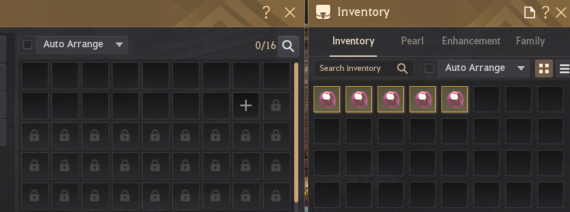
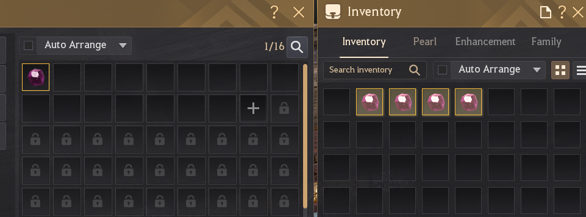
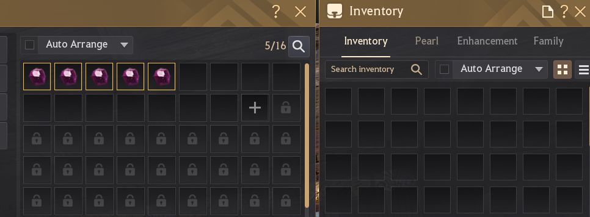
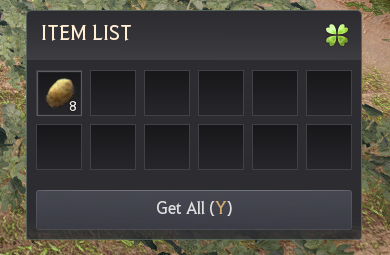

Passively decodes supported live or recorded Black Desert Online traffic into structured Python objects.
v1.0.3 · stablePython ≥ 3.14passive · read-only
Region validation currently covers NA/EU only. Other regional services are unverified, may use different network traffic or packet layouts, and have unknown compatibility.
Black Desert sends information to the game client as you play. bdo-toolkit passively observes supported inbound traffic—or reads the same traffic from a saved capture—then turns the selected activity into Python objects your application can query, filter, or serialize.
1. You play normally
Collect an item, move something through town storage, log in or switch characters, or load the Arena of Solare Leaderboard.
2. The toolkit observes
Live capture listens to inbound game traffic. Replay reads an existing PCAP or PCAPNG without requiring the game to be open.
3. Your code receives a result
Item events form a continuing stream; character-load traffic can become an inventory and storage snapshot; Solare produces one leaderboard result.
Choose a workflow
Start with the in-game information your application needs. Each workflow has its own result and can be used independently.
The toolkit observes inbound traffic or reads a saved capture. It never sends commands to the game or performs actions for the player.
Based on observed traffic
Results describe what appeared while capture was running. The toolkit cannot request current account information from the game server.
Missing evidence remains missing
If traffic is incomplete or ambiguous, the result remains partial, unknown, or incomplete rather than guessing.
Captured data can be sensitive. PCAPs and serialized results can contain network endpoints, inventory or storage contents, leaderboard names, and performance statistics. Raw captures can also contain identifier-like opaque bytes that the toolkit does not decode or publish. Apply the integration’s retention and sharing policy; see Capture privacy.
Install the package and prepare the computer for passive live capture across item, calibration, and Arena of Solare workflows.
Install
python -m pip install bdo-toolkit
Installs the bdo_toolkit package, the bdo-toolkit command, and required dependencies from the published distribution.
Choose live or replay
Source
Environment
Use
Live capture
Compatible capture backend, permission to capture traffic, and an active game session
Continuing item activity; inventory hydration during a login or character switch; town-storage hydration during the first world load after a fresh game launch; live calibration; or the first Solare Leaderboard load after a game restart.
PCAP or PCAPNG replay
No capture driver, adapter selection, or elevated shell
Repeatable development, tests, support diagnosis, and post-patch verification.
Most applications begin with live capture. Replay remains useful when a representative recording already exists or the same evidence must be analyzed repeatedly.
Supported live-capture environment
Live capture is environment-dependent. Successful startup means that a capture adapter opened; it does not prove that the selected adapter can see BDO traffic. The toolkit currently consumes inbound, unfragmented IPv4/TCP packets. Adapter drivers, virtual adapters, VPN routing, packet loss, or traffic visible only as an encrypted tunnel can make a live run incomplete or silent.
Validated Windows/Npcap baseline and WinPcap mode
Windows live capture requires Npcap 1.88 or later. Versions older than 1.88 are outside the supported configuration. As of September 3, 2026, maintainer live-capture validation covers Windows 11 25H2, Python 3.14.0, Npcap 1.88, Scapy 2.7.0, and a wired Ethernet adapter. Later Npcap releases satisfy the documented version floor but are not automatically treated as independently validated.
This is a documentation support boundary. The validated machine had WinPcap API-compatible mode enabled, but the toolkit does not determine whether that mode is required and does not inspect or reject the installed Npcap version. Other operating systems and Npcap installation modes are not part of the current maintainer live-capture validation. Offline replay does not use Npcap or select a local adapter, but the recording must still contain supported BDO traffic.
Hardware, network card, and driver compatibility
The live capture path includes the physical or virtual adapter, its driver and offload behavior, operating-system routing, the platform capture backend (Npcap on Windows), Scapy, and then the toolkit. Those layers can present the same network connection differently, so one known-good network card is not a compatibility list for every card or driver.
Live-capture prerequisites
Complete this checklist before running any live example. Without a compatible capture backend and permission to observe traffic, Quickstart, live calibration, character-load capture, and live Solare capture cannot start.
Windows: install Npcap 1.88 or later. Domain-specific capture requirements are documented with their owning live API.
Other platforms: use the packet-capture backend available to Scapy, with the understanding that physical live capture is currently unverified outside the Windows baseline above.
Permissions: run with permission to capture traffic. Elevation is required only when the installed driver or local security policy requires it.
Timing: start capture before the relevant game action—for example, before collecting or moving an item, logging in or switching characters, or opening the Solare Leaderboard for the first time after a game restart.
Live capture observes inbound server traffic only; it does not send, inject, modify, delay, or automate game traffic.
Live APIs create their default options internally. Supply an options object only when this computer needs a different adapter, destination IPv4, server-port set, filtering mode, or item-event queue size.
Workflow
Argument
Use
Continuing item events
live_options=
LiveCaptureOptions, which includes every shared packet setting plus the item stream’s packet and event queues.
Item state, calibration, or Arena of Solare
capture_options=
PacketCaptureOptions, which configures the adapter and packet-selection rules shared by those finite or specialized captures.
PCAP or PCAPNG replay
Neither
Replay reads an existing file and does not open a live adapter. Supply its documented ports= argument only when the recording uses a non-default server port.
LiveCaptureOptions inherits PacketCaptureOptions; it is not a competing network configuration model. Use the parameter name and option type documented by the live API you are calling.
An interface is the physical or virtual network adapter observed by the platform capture backend (Npcap on Windows). Automatic selection follows the computer’s generic default IPv4 route; it does not identify the route used by a particular BDO connection.
Network setup
What may happen
First choice
One active adapter, no VPN
The default IPv4 route normally uses the adapter carrying BDO.
Leave interface=None.
Several physical or virtual adapters
The default-route adapter may not carry the game connection.
Use the exact Scapy adapter name through interface=.
Full-tunnel VPN
Readable BDO IPv4/TCP may appear on the VPN’s virtual adapter while Ethernet or Wi-Fi exposes only encrypted tunnel traffic.
Select the virtual adapter that actually exposes the decrypted connection.
Split or per-application VPN routing
BDO may remain on Ethernet or Wi-Fi even though the generic default route uses the VPN.
Select the physical or virtual adapter that actually carries BDO.
VPN connected, disconnected, or rerouted after startup
The running session remains attached to the adapter, local IP, and filters chosen at startup.
Stop it and start a new capture session.
Some VPN and filter drivers expose no adapter to the active capture backend (Npcap on Windows) containing the decrypted BDO connection. The toolkit cannot decode traffic that the capture backend never supplies. Setting use_bpf=False can diagnose a BPF capture-path difference, but it cannot change adapters, decrypt a tunnel, or add IPv6 support.
local_ip is a destination-IPv4 restriction, not an interface selector. When an interface is selected explicitly and local_ip=None, automatic local-IP discovery does not run and no destination-IP restriction is added.
Connect any VPN and establish the intended route before starting capture.
Use an explicit session where available and inspect its resolved CaptureEndpoint after startup.
Perform one known in-game action while capture is ready, then inspect the workflow’s output and, where exposed, final capture health. Otherwise inspect its acquisition counters or result diagnostics.
The endpoint reports what was selected, not whether BDO was visible there. A clean health result means that the observed capture path reported no known loss; it does not prove that the correct adapter saw the game connection.
Next: Opcode profile setup
Continue to Opcode profile setup unless the application is Solare-only. Item events, inventory and town-storage state, and item calibration all use a local opcode profile. Arena of Solare is the only public workflow that does not.
The command downloads and verifies the selected profile once. Capture never updates it in the background.
The stable channel does not update itself. It can lag a weekly patch until a maintainer promotes a current profile. If uninterrupted decoding matters, learn manual calibration and keep it as your patch-day fallback. A locally calibrated profile remains on the computer and is not uploaded automatically.
Pass the file path as opcode_profile= whenever an item workflow starts. The Quickstart uses the same opcodes.local path created above.
Keep the profile with the application or recording that uses it. Live traffic needs a current profile. An older PCAP needs the matching profile from that recording’s patch.
3. Verify it in game
Run Quickstart, then gather an item, collect a mob drop, or withdraw something from town storage. Confirm that the printed item ID, quantity, and source match what happened in game.
Run one small Python program, perform an item action in game, and print the first item event the toolkit observes.
Complete both required setup pages first. Install the package and live-capture support through Installation & setup, then create opcodes.local through Opcode profile setup.
Example: Capture one item event
from bdo_toolkit import LiveCaptureSession
with LiveCaptureSession(opcode_profile="opcodes.local") as session:
print("Listening for item activity...")
for event in session.events():
print(event.format_human())
break
from contextlib import closing
from bdo_toolkit import replay_pcap
with closing(replay_pcap(
"path/to/session.pcapng",
opcode_profile="path/to/matching-opcodes.json",
)) as events:
for event in events:
print(event.format_human())
break
Live: save the code as quickstart.py, run python quickstart.py, then gather an item, collect a mob drop, or withdraw something from town storage. Replay: replace both placeholder paths with a recording and the profile from that recording’s patch.
ITEM_RECEIVED identifies an item entering inventory, Gathering describes the in-game source, and the remaining fields provide the raw item ID, quantity, and observed instance value. Other actions produce different event types and source labels.
Run these from a repository checkout with a current opcodes.local at its root. Each script is the complete starting point for its matching guide lesson.
Calibration changes local profile state. The transfer examples use five matching unstackables; the loot-preview example uses one known item expected in that window. Each writes opcodes.local only after its calibration check passes. Follow the matching Calibration walkthrough before running one.
Solare examples do not use an item opcode profile. Live capture still requires the shared capture setup; run the live example with --save-pcap to keep one Leaderboard load for every query lesson.
Get the lesson files: clone or download the repository ↗, then run each command from its root. Installing the package with pip does not install examples/.
From a game action to Python
Item activity is a continuing stream of changes observed after the listener starts. Gathering, collecting a monster drop, withdrawing from storage, or adding an item to town storage can each produce a decoded event. It does not reconstruct inventory or storage contents that were already present.
game action→capture_live()→BDOEvent→EventFilter→your code or writer
The common live event types have different game meanings:
source identifies a proven origin or producing system, such as Player Inventory or Worker Production; storage_id identifies the destination. A withdrawal instead appears as item_received from Storage.
It is not proof of receipt and requires separately calibrated preview support.
Every loop value is an immutable BDOEvent. Most applications begin with event_type, source, item_id, and quantity. Time, enhancement, storage identity, human formatting, and serialization remain available on the same object. Item names and marketplace data are application-owned; the toolkit returns raw game IDs.
EventFilter controls delivery after an event has been decoded and any storage source has been classified. Event writers turn a delivered event into a console line or a JSONL record; they do not capture traffic themselves.
A quiet stream is not proof that nothing happened. A weekly patch can leave a stale profile loading normally while decoding no current traffic. Verify the profile, inspect diagnostics and health, and use zero-event troubleshooting before treating silence as game state.
The maintained example adds a profile check, decoder diagnostics, timestamps, semantic source labels, and storage-destination formatting. The final line omits source because the live addition was proven but its semantic source was unresolved. The same capture loop can be much smaller when you are learning the API.
Build the listener yourself
from bdo_toolkit import EventFilter, capture_live
confirmed_activity = EventFilter(
event_types={"item_received", "storage_delta"},
)
for event in capture_live(
opcode_profile="opcodes.local",
event_filter=confirmed_activity,
):
fields = [event.event_type]
if event.source is not None:
fields.append(event.source)
if event.storage_id is not None:
destination = event.storage_name or (
f"UNKNOWN_STORAGE(0x{event.storage_id:08x})"
)
fields.extend((destination, f"0x{event.storage_id:08x}"))
fields.extend((event.item_id, event.quantity))
print(*fields)
EventFilter keeps the two confirmed activity types used by this listener. Character-load records, unresolved neutral records, and loot_preview stay out.
capture_live() starts passive capture and blocks while waiting for traffic.
Each pass through the loop receives one BDOEvent. The generator keeps listening until Ctrl+C, a capture failure, or an optional deadline ends it.
Your loop decides whether to print, count, store, or forward the event.
The known semantic origin, producing system, or event context. Storage additions can use Player Inventory, Worker Production, or None when the live source is unresolved.
Before running: ensure a current opcodes.local exists in the repository root.
python examples/live_mob_drops.py
Leave the counter running and return to the game.
Defeat monsters and collect their dropped items.
Press Ctrl+C when you are finished.
Representative outputtotals reset when the script restarts
Collect mob drops in game. Press Ctrl+C to stop.
item_id=1000707 quantity=1 total_this_run=1
item_id=1000707 quantity=2 total_this_run=3
item_id=44195 quantity=1 total_this_run=1
Build the tracker yourself
from collections import Counter
from bdo_toolkit import EventFilter, capture_live
totals: Counter[int] = Counter()
mob_drops = EventFilter(
event_types={"item_received"},
sources={"Mob Drop"},
)
for event in capture_live(
opcode_profile="opcodes.local",
event_filter=mob_drops,
):
totals[event.item_id] += event.quantity
print(event.item_id, event.quantity, totals[event.item_id])
The filter combines its configured fields with AND: the event must be both item_received and sourced from Mob Drop. Values inside one field are alternatives, and string matching is exact and case-sensitive. The standard Python Counter is application state; the toolkit continues to deliver ordinary BDOEvent objects.
Use and extend the observed totals
event.quantity is the amount in one observed receipt. The counter adds those receipts for this process run; it is not the character’s current inventory quantity. For current contents, use Inventory & town storage.
Waiting for worker production to reach town storage. Press Ctrl+C to stop.
source='Worker Production' destination='Heidel' storage_id=0x00000020 item_id=4003 quantity=20
Build the tracker yourself
from bdo_toolkit import EventFilter, capture_live
worker_productions = EventFilter(
event_types={"storage_delta"},
sources={"Worker Production"},
)
for event in capture_live(
opcode_profile="opcodes.local",
event_filter=worker_productions,
):
destination = event.storage_name or (
f"UNKNOWN_STORAGE(0x{event.storage_id:08x})"
if event.storage_id is not None
else "unknown"
)
print(
event.source,
destination,
event.storage_id,
event.item_id,
event.quantity,
)
storage_delta proves live storage activity. Requiring sources={"Worker Production"} then keeps additions whose bounded classifier evidence identifies worker production.
An unregistered key remains available as numeric storage_id with storage_name=None; applications can display UNKNOWN_STORAGE(0x...) without storing a fabricated name. quantity is the amount added, not the resulting storage total. Multi-record productions may also expose record_index and record_count. The event does not expose a worker identity, production node, task name, or specific production facility.
Classification fails closed. Silence is not proof that no production completed. If the captured messages do not prove worker origin, the addition does not pass this filter; decoder problems remain available through diagnostics.
Filtering happens after an event has been decoded and storage origin has been classified. Pass one filter to the capture API; only matching events enter your application loop.
Live item-event APIs interpret event_filter=None as EventFilter.activity(). Replay interprets None as exhaustive delivery. Any explicitly supplied filter replaces that calling API’s default.
Use a preset or its explicit equivalent
These tabs construct equal immutable filters. Prefer the preset when its meaning matches the stream you want; use the constructor when adding or changing criteria.
from bdo_toolkit import EventFilter
activity = EventFilter.activity()
activity() deliberately excludes character-load snapshot events and neutral inventory_record/storage_record values.
Combine exact criteria
from bdo_toolkit import EventFilter, capture_live
heidel_worker_items = EventFilter(
event_types={"storage_delta"},
sources={"Worker Production"},
storage_ids={0x0020},
item_ids={4607, 7003},
)
for event in capture_live(
opcode_profile="opcodes.local",
event_filter=heidel_worker_items,
):
print(event.item_id, event.quantity)
Values inside one criterion are alternatives: item ID 4607 or 7003 may match. Configured criteria are cumulative, so the event must also be a storage_delta delivered to Heidel with worker-production evidence.
sources={"Worker Production"} selects the inferred producing system; storage_ids={0x0020} independently selects Heidel. All configured fields use AND semantics. Enhanced items may use different raw IDs, so filtering on item_ids does not match base_item_id.
Capture and replay call allows() internally. Call it yourself only when filtering an event that has already reached application code. from_values() is an alternate constructor, not a composition or chaining API.
Avoid silent filter mistakes
Wrap one value in a collection: use storage_ids={0x0020}, not storage_ids=0x0020.
None leaves one criterion unrestricted; an empty iterable makes that criterion reject every event.
sources matches semantic origin or context labels, including Worker Production and Player Inventory. Use storage_ids for a town-storage endpoint.
A source-only or storage-ID-only explicit filter does not inherit the live activity preset and can match non-activity records. Include event_types when the stream must remain activity-only.
Filters copy supplied iterables into frozenset values and cannot be modified after construction. Build a new filter when the policy changes.
Trace how captured TCP becomes a delivered BDOEvent, including framing, fail-closed storage classification, ordering, and bounded live-capture behavior.
TCP packets are only transport containers. One packet can hold several BDO messages, and one message can span several packets. The toolkit therefore reassembles each server-to-client flow before it looks for complete length-framed messages. A selected profile then supplies the opcode and byte geometry needed to decode one or more item records from a message.
Term
Meaning inside the item-event pipeline
Packet
One captured TCP segment. It is never treated as an item-event boundary.
Message
One complete reassembled BDO wire unit with its own length and opcode.
Record
One item entry decoded from a message; a repeated message can contain several records.
Event
The immutable, normalized BDOEvent delivered after classification and filtering.
Each decoded event retains the timestamp associated with its reassembled message. The runtime also preserves message length, opcode, record position, and—when available—a provisional per-flow stream position for debugging. Those decoder details do not turn a continuous event stream into a complete inventory ledger.
Framing and profile selection fail closed
The engine begins unsynchronized when capture attaches midstream. It accepts a generic message boundary only from framing evidence such as a known opcode, an exact standalone frame, or consecutive plausible lengths. Retransmission and ordinary out-of-order delivery are resolved per directional flow before scanning; bytes missing from the capture cannot be reconstructed.
One explicit, immutable opcode profile is compiled into runtime layouts. A candidate must satisfy the selected layout’s message-length and item geometry. Ordinary receipts, loot previews, and storage records require an independent top-level message boundary; a nested signature alone cannot produce an event. Inventory hydration can also recover from two fully decoded, exactly adjacent wrappers on the same TCP flow generation, including across a sequence-number wrap. Already-framed payload cannot acquire new boundaries through a differently segmented retransmission.
Overlapping same-opcode loot-preview layouts and contradictory storage geometry are rejected. When an ordinary inventory-transfer layout supports structural validation, failed record-marker, instance, or repeated-record checks are final: the decoder does not retry those bytes through weaker configured-stride decoding.
A profile can still be valid JSON and stale for the current patch. Static validation proves the file’s shape; observed traffic establishes whether its current opcodes and storage geometry still match. Quiet decoding is therefore not necessarily an exception.
Non-storage events can usually proceed directly to delivery. Storage records first pass through two stateful classifiers because the decoded item fields alone do not prove whether a message describes a live addition or existing character-load state.
storage_delta with source="Worker Production". Worker evidence takes precedence over a nearby manual signal.
No worker chain, but a calibrated matching source decrement
storage_delta with source="Player Inventory".
Live activity is proven without worker or manual source evidence
storage_delta with source=None.
A multi-destination character-load cohort
storage_snapshot with source=None.
No independent live or hydration proof
The event remains neutral storage_record with source=None.
The origin classifier gets first refusal so genuine deposits do not inherit a nearby hydration epoch. Hydration classification then groups still-neutral records by TCP flow generation, opcode, timing, and destination diversity. Neither stage infers cause from a town name or from one context byte.
EventFilter runs only after both stages. An activity filter can therefore see an evidence-promoted storage_delta, and a sources criterion sees the final semantic label. Decoder diagnostics remain out-of-band and bypass the filter.
Origin and hydration decisions use bounded lookahead. While one storage event waits for enough evidence, a later non-storage event can be delivered immediately. The deferred storage event can therefore appear later in iteration even though its original timestamp is earlier.
Do not treat iteration order as a strict global wire order when mixing storage with other event types. Use timestamp for application correlation, keep the original value when buffering or sorting, and remember that equal timestamps and separate TCP flows still do not provide one universal total order. The optional extra["stream_sequence"] value is per-flow provisional metadata, not a cross-flow ordering key.
Current bounds and backpressure
The following are current implementation safeguards, not compatibility promises. Public queue sizes are configurable through LiveCaptureOptions; classifier and flow limits deliberately remain internal.
State
Current bound or behavior
Why it matters
Raw-packet handoff
4,096 packets by default; the native callback never blocks.
The packet worker advances the clock at drained queue boundaries.
Missing bytes already accepted for decoding are processed before an idle timeout can abandon their gap.
Worker-origin correlation
32 following complete messages or 2 seconds; at most 64 pending operations per flow and 4,096 total.
Unconfirmed or contested evidence fails neutral instead of growing without limit.
Manual-origin correlation
The two most recent earlier complete messages on the same flow.
A calibrated decrement must match; a coincidental quantity does not override instance-aware geometry.
Hydration classification
A 30-second inventory-anchored epoch; storage bursts are split after a 0.5-second gap or 1 second total.
At least 8 destinations prove an anchored cohort. The storage-only fallback requires 17 destinations and a record count of at least 8.
Pending hydration records
10,000 events.
An oversized unproven cohort flushes as neutral records rather than consuming unbounded memory.
Filtering is not a packet-capture optimization: candidate traffic still has to be framed and decoded before values can be matched. The runtime can, however, omit the origin-correlation graph when the explicit filter cannot deliver storage events and no origin_observer is installed.
The async facade uses the same underlying session boundaries on its private worker.
Cancellation and awaited lifecycle methods preserve the synchronous failure and cleanup contract.
A live capture_seconds deadline belongs to the capture session and continues while caller code is paused after a yielded event. During stop, capture is joined first, every accepted packet ahead of the worker sentinel is decoded, TCP reassembly is finished, and pending origin and hydration decisions are finalized. Shutdown-finalized events remain drainable before the retained background error is raised.
If cleanup_incomplete is true, the original session still owns native or worker resources. Retry stop() on that same owner; creating a replacement session does not complete the first cleanup.
Which deduplicated storage-decoder warning explains incompatibility or unresolved destination identity?
These signals are independent. A capture can be locally clean while a stale profile decodes nothing useful, and storage_status="not_observed" proves neither compatibility nor incompatibility. Active health reads are point-in-time observations; use the final post-stop value when completeness matters.
The capture_live() convenience iterator exposes diagnostics but not its internal session health. Applications that must make integrity decisions should own a LiveCaptureSession or its async counterpart.
Capture inventory from a login or character switch—and town storage from the first world load after a fresh game launch—then query one finite snapshot of the state actually observed.
Storage requires the first world load after a fresh game launch. As of the September 3, 2026 NA/EU patch, the full town-storage hydration has been observed only when the first character enters the playable world after launching Black Desert. Later character switches continue to hydrate character inventory but do not resend the full storage snapshot. Start capture before that first world load whenever storage contents are required.
Get the lesson files: clone or download the repository ↗, then run each command from its root. Installing the package with pip does not install examples/.
From character load to one snapshot
Current NA/EU traffic sends character-inventory records during both the first world load and later character switches, but the complete town-storage state is sent only during that first world load after a fresh launch. CharacterLoadSession passively captures whichever records the game sends, and stop() assembles them into one ItemStateSnapshot. The snapshot is immutable and does not keep updating after capture ends.
CharacterLoadSession.stop()→ItemStateSnapshot→inventory or storages→your query
Selection is conservative: only the latest inferred inventory generation and storage sweep become queryable current state. A validated empty inventory wrapper still counts as observed hydration and produces an empty current inventory instead of carrying forward an earlier character’s items. See Item-state internals for the generation, sweep, identity, and fail-closed assembly rules.
Start passive capture before the right load—any login or character switch for inventory, or the first world load after a fresh game launch for town storage—and stop after the playable world settles.
Choose the load for the data you need. A character switch remains sufficient for inventory hydration. For town storage on current NA/EU traffic, restart Black Desert and have capture ready before the first character enters the playable world; switching characters later does not rehydrate storage.
Run the finished example
Before running: ensure a current opcodes.local exists in the repository root.
python examples/live_character_load_snapshot.py
Wait until the terminal says capture started.
For inventory, log in or switch characters. For town storage, use the first world load after a fresh game launch.
Wait until the new character is fully playable and the world has settled.
Return to the terminal and press Enter.
The maintained example checks the profile path, handles Ctrl+C, and prints format_item_state(snapshot) for troubleshooting.
Inspect the finite result
Representative formatter excerptcounts depend on the character load
CHARACTER LOAD SNAPSHOT DIAGNOSTIC
Storage decoder: compatible (... observed wrappers decoded)
Hydration packets detected; trigger is unclassified (initial login vs character switch).
INVENTORY SNAPSHOT
183 serialized records: 179 occupied item stacks + 4 currency balances
STORAGE SNAPSHOT
27/34 known destinations observed
642 unique occupied item stacks from ... decoded snapshot records
Private output: the formatter can print profile paths, balances, towns, and storage counts. Review it before sharing.
Build the capture yourself
from bdo_toolkit.item_state import CharacterLoadSession
with CharacterLoadSession(opcode_profile="opcodes.local") as session:
input(
"Capture started. For storage, enter the world for the first time "
"after a fresh game launch; a later character switch captures "
"inventory only. Press Enter after the world has settled: "
)
snapshot = session.stop()
print(f"Hydration detected: {snapshot.hydration_detected}")
print(f"Inventory observed: {snapshot.inventory.hydration_observed}")
print(f"Storage decoder: {snapshot.decoder_health.storage_status}")
Construction loads and pins the explicit opcode profile for this one session.
Entering the context calls start() and returns only after passive capture is ready.
You perform the character load after capture starts. There is no automatic completion marker, so the Enter press is the operator’s stop decision.
stop() drains capture, assembles state, and returns the snapshot. Context exit is cleanup protection, but it does not give application code the result unless stop() is called inside the block.
Private output: item IDs, quantities, and container labels describe your character. Review the terminal before sharing it.
Build the inventory loop yourself
from bdo_toolkit.item_state import CharacterLoadSession
with CharacterLoadSession(opcode_profile="opcodes.local") as session:
input("Log in or switch characters, then press Enter when settled: ")
snapshot = session.stop()
inventory = snapshot.inventory
if not inventory.hydration_observed:
raise RuntimeError("No character inventory was observed")
if not inventory.items:
print("No occupied inventory stacks were observed")
for item in inventory.items:
label = item.container_name or "Unclassified"
print(item.item_id, item.quantity, label)
This lesson uses items because it needs every ordinary stack. From the same inventory result, use records_for(item_id) for matching stack records or quantity_for(item_id) for only their summed quantity.
Capture storage on the first world load. Restart Black Desert, start capture, and then enter the playable world for the first time. Character switches on current NA/EU traffic do not resend this town-storage state.
Run the finished example
Set TOWN_NAME = "Heidel" to the destination you want, then run:
Before running: ensure a current opcodes.local exists in the repository root.
python examples/live_town_storage_contents.py
After capture starts, enter the world for the first time after the fresh launch, wait for the playable world to settle, and press Enter.
Read the selected contents
Representative outputidentifiers and middle rows omitted
The selected current state explicitly proved the town storage empty.
An empty items tuple alone is not enough to claim the town is empty. Name matching is case-insensitive, and the storage registry does not manufacture an entry when a known town was absent from the capture.
This lesson uses named() for a user-facing town name. Use by_id() when persisting or comparing identity; numeric storage_id is authoritative. Iterate snapshot.storages to enumerate returned destinations, or use find_item(), total_quantity(), and locations_for() for cross-town queries.
occupied_stacks counts retained records, not used capacity. Storage capacity is not decoded.
Build the town lookup yourself
from bdo_toolkit.item_state import CharacterLoadSession
town_name = "Heidel"
with CharacterLoadSession(opcode_profile="opcodes.local") as session:
input("Enter the world for the first time, then press Enter when settled: ")
snapshot = session.stop()
if snapshot.decoder_health.storage_status != "compatible":
raise RuntimeError("Town-storage decoding is unavailable")
storage = snapshot.storages.named(town_name)
if storage is None:
raise LookupError(f"{town_name} was not returned by this snapshot")
if not storage.current_state_observed:
raise RuntimeError(f"{town_name} has no selected current state")
if storage.current_empty:
print(f"{town_name}: explicitly observed empty")
else:
for item in storage.items:
print(item.item_id, item.quantity)
Before running: ensure a current opcodes.local exists in the repository root.
The example starts with TARGET_ITEM_ID = 7003 and the application label "Potato". Replace both for your application, then run:
python examples/live_item_state_search.py
To include town storage, start capture before the first world load after a fresh game launch and press Enter after the playable world settles. A later character switch can refresh the inventory portion only. The label is only for display; the toolkit does not translate item IDs into names.
Interpret the observed total
Representative outputobserved snapshot only
Potato (item_id=7003)
Character inventory: 38
Town storage: 621
Velia: 421
Heidel: 200
Observed total: 659
Private output: quantities by town describe character state. Review the terminal before sharing it.
Observed total is not an account total. A zero means no retained match in that source. Missing destination coverage, unavailable storage decoding, or identity-unresolved records can lower the result. The maintained example prints unavailable sources and omits the combined total unless both sources were observed.
Build the search yourself
from bdo_toolkit.item_state import CharacterLoadSession
item_id = 7003
with CharacterLoadSession(opcode_profile="opcodes.local") as session:
input("Enter the world for the first time, then press Enter when settled: ")
snapshot = session.stop()
if not snapshot.hydration_detected:
raise RuntimeError("No character-load item state was detected")
inventory_total = None
if snapshot.inventory.hydration_observed:
inventory_total = snapshot.inventory.quantity_for(item_id)
print(f"Character inventory: {inventory_total}")
else:
print("Character inventory: unavailable")
storage_total = None
if snapshot.decoder_health.storage_status == "compatible":
storage_total = snapshot.storages.total_quantity(item_id)
print(f"Town storage: {storage_total}")
for storage in snapshot.storages.locations_for(item_id):
label = storage.name or f"UNKNOWN_STORAGE(0x{storage.storage_id:08x})"
print(f" {label}: {storage.quantity_for(item_id)}")
else:
print("Town storage: unavailable")
if inventory_total is not None and storage_total is not None:
print(f"Observed total: {inventory_total + storage_total}")
Trace how character-load traffic becomes one observational ItemStateSnapshot, including atomic decoding, generation and sweep selection, identity merging, and fail-closed limits.
captured TCP→framed messages→snapshot records and empty envelopes→generation and sweep selection→instance merge→ItemStateSnapshot
Character-load decoding reuses the ordinary item-event engine for TCP reassembly, framing, profile validation, and low-level records. Inventory hydration becomes inventory_snapshot. Storage first enters the neutral classification pipeline and becomes storage_snapshot only when hydration evidence is strong enough.
The finite assembler observes both decoded records and selected raw message envelopes. That second input matters because a valid count-zero wrapper contains no item record and therefore cannot produce a per-item BDOEvent; the envelope is the evidence that an inventory group or town storage was explicitly empty.
Assembly happens only when CharacterLoadSession.stop() or offline end-of-file finalization is reached. The returned object is immutable and does not continue applying later item events.
The profile supplies the opcode, normalized one-record base length, and item, quantity, context, and instance geometry. For a multi-record wrapper, runtime searches the prefix for a plausible declared count and derives the record stride from the actual message length, base length, and count. The division must be exact, every record offset must line up, and every declared item ID, quantity, and instance must validate.
If one declared record fails, the entire wrapper is rejected. The decoder never emits a valid-looking prefix of a malformed batch and does not fall back to marker scanning.
Container and slot metadata are a separate, weaker inference. The assembler first tests a small record-tail window, then a wrapper-header container column, using complete sibling groups and recognized raw container codes. One ambiguous layout or unknown code withholds container metadata for that opcode while preserving otherwise valid item records in unclassified_records. Known wallet balances require both the observed container code and item ID; an item ID alone is not enough.
Storage state uses stronger finite-capture evidence
Storage wrapper geometry remains profile-driven: the calibrated destination and declared-count fields must agree with message length and complete record validation. Runtime preserves the numeric destination even when the registry has no display name; it never substitutes another known-looking field.
The continuing item-event stream deliberately leaves an unproven storage group neutral. The dedicated item-state assembler has additional evidence unavailable to that stream: a selected inventory hydration boundary, retained count-zero envelopes, and the surrounding finite storage sweep. It can use a broad inventory-anchored empty/nonempty cohort to prove sparse storage hydration, or reconcile timing-split neutral groups into an already proven sweep.
Reconciliation cannot cross a confirmed live storage mutation and stays within one TCP flow generation, storage opcode, bounded inventory epoch, and inferred sweep. These stricter finite-capture rules improve snapshot recovery without weakening the fail-neutral behavior of ordinary live item events.
A new TCP flow generation or a gap greater than one second between record-bearing or validated count-zero inventory wrappers starts another inferred generation.
Only the latest generation is assembled. An empty latest generation clears earlier items and still anchors its storage epoch.
Storage destination block
A destination, flow/opcode, empty-state change, or gap greater than one second closes the current block.
Tightly timed chunks for the same destination remain one block.
Storage sweep
The first previously closed destination encountered again starts another inferred sweep.
The latest sweep is selected as current state.
A selected count-zero block clears earlier items for that destination. A destination seen only in an earlier sweep remains represented for provenance, but current_state_observed=False and its earlier items are withheld from current queries. This is safer than carrying stale contents into a later sweep that may itself be partial.
If neither an inventory record nor a validated count-zero inventory wrapper is observed, there is no inventory-derived character-load boundary. The assembler retains all observed storage diagnostics, uses only the latest inferred storage sweep for current contents, records generation_selection="all_observed_storage_no_inventory_boundary", and warns that evidence may span multiple loads.
Observed instance identity controls merging
Inventory state is keyed by the decoded item instance. Storage state is keyed by the decoded storage instance inside one selected destination block. Repeated observations with the same opaque identity collapse to the latest retained record, while advanced diagnostics preserve raw and duplicate evidence counts.
A record without its calibrated eight-byte instance is never assigned a synthetic key. It remains visible through missing-identity diagnostics but is excluded from distinct stacks, occupied-stack counts, quantity totals, wallet interpretation, and duplicate inference. This prevents a damaged layout from inventing extra state.
Instance identity does not establish UI order. Returned tuples are sorted for deterministic output, not as an inventory-slot or town-storage-slot contract.
Specific missing-identity, registry, and selected-sweep gaps.
Account-wide completeness or a protocol end marker.
No completion marker has been decoded. The payload also does not distinguish initial login from a character switch or expose trustworthy inventory/storage capacities. Treat every snapshot as observed evidence, not as a continuously maintained account database.
Current bounds and inference thresholds Optional referenceShow detailsHide details
These are implementation safeguards and inference thresholds, not stable protocol promises.
Mechanism
Current value or rule
Inventory-generation split
New TCP flow generation or more than 1 second between consecutive inventory messages.
Storage destination-block split
Destination, flow/opcode, empty state, or more than 1 second between groups changes.
Inventory-anchored storage epoch
30 seconds; sparse finite proof requires at least 8 distinct destinations and at least one validated empty envelope.
Storage hydration burst
Split after a 0.5-second inter-group gap or 1 second total.
Relevant framed evidence
10,000 retained frames by default.
Snapshot records
50,000 retained records by default.
Relevant raw bytes
64 MiB retained by default.
The accumulator checks before retaining an over-limit frame or record and raises ItemStateCaptureLimitError; no silently truncated snapshot is returned. Exact configurable defaults and exception fields remain in the capture-limits reference.
Patch-recovery boundary
Ordinary calibration can update opcodes, normalized base lengths, record spacing, and the item, quantity, instance, storage-destination, and declared-count positions. Item-state runtime then derives multi-record stride plus inventory count and container metadata from those inputs.
A redesigned item-record structure, new count encoding, changed destination-ID meaning, or changed hydration relationship requires decoder work. Ambiguity fails closed as rejected frames, missing metadata, neutral storage records, incompatible decoder health, or no snapshot—not a guessed state.
Keep item decoding current after a patch by installing a maintained profile when one is available or calibrating your own from controlled in-game actions.
Get the lesson files: clone or download the repository ↗, then run calibration and verification from its root. Installing the package with pip does not install the examples/ directory.
Why calibration exists
Item decoding uses an explicit local profile that describes where current-patch messages carry item IDs, quantities, instances, storage destinations, and repeated records. A weekly patch can move those layouts. The old file may still load normally while a listener quietly produces no events.
Calibration watches a known item while you perform controlled game actions, then derives promoted message specs from that evidence. Capture and analysis can work without a usable old profile and do not write anything; profile persistence is a separate decision.
Choose how to recover after a weekly patch
A maintained profile is not generated automatically. A maintainer must capture current traffic, verify the result, and promote it, so the stable channel may be unavailable or still point to the previous patch when maintenance ends.
Whichever route you choose, start a fresh live item-activity logger afterward and perform one known item action. Every weekly patch needs verification, not necessarily local calibration. A profile is loaded and pinned when decoding starts, so an already-running listener cannot verify a newly installed file.
CalibrationSession.stop() analyzes retained frames and returns a read-only CalibrationResult. It has no global ok flag because success is evaluated per profile family. events_found names the promoted uppercase families, while specs contains their derived layouts.
The walkthroughs use the two-step session and update APIs so they can inspect the recovered families before choosing to write. calibrate_and_update() is the one-call alternative; it applies the same three-family automatic readiness gate before accessing or writing the profile.
Unrelated structural classifier; it does not use the item profile
Calibration never moves items or interacts with the game. Capture and analysis remain passive; in these walkthroughs, only the update_profile() persistence step changes the local file. Default writes preserve unrelated families and back up an existing file before an eligible change.
Calibration can recover moved opcodes and record positions. It cannot automatically repair a fundamentally redesigned item record, count encoding, destination identity, or evidence relationship.
This guide uses five Magic Crystal of Infinity - Skill, raw item ID 15156, because they are inexpensive, widely available, and unstackable. You may use another unstackable item instead; change ITEM_ID to that item's raw ID.
Use five matching copies of the chosen unstackable item.
Put all five in character inventory and leave none in the chosen storage.
Choose one unambiguous registered town, such as Velia, Heidel, Calpheon City, or Olvia.
Do not use Muzgar, Velandir, Yukjo Street, Godu Village, or Bukpo for calibration.
Keep QUANTITY = 1, because each serialized record represents one unstackable item even when four or five are moved together.
Starting state: before captureTown storage is left; character inventory is right
Before captureFive crystals in inventory

Storage 0Inventory 5
Reach this starting state before launching the example. Move no other copies of the watched item during calibration.
2. Run the example and follow the three moves
The example can update opcodes.local. It writes only after the required transfer evidence passes, preserves unrelated profile families, and backs up an existing file before changing it. An incomplete result writes nothing.
Before running: run from the repository root so calibration and verification use the same opcodes.local.
python examples/live_calibrate_profile.py
Wait for the terminal prompt before touching storage:
Representative promptrun from the repository root
Listening in the background.
Perform the following in-game actions yourself while capture remains open.
Use one unambiguous town such as Velia, Heidel, Calpheon City, or Olvia.
Do not use Muzgar, Velandir, Yukjo Street, Godu Village, or Bukpo.
Using unstackable item 15156 (per-record quantity 1):
deposit one item, then deposit the remaining four,
then withdraw all five matching items in one action.
Press Enter when all three moves are done...
Perform each move while the prompt remains open
Town storage is shown on the left and character inventory on the right. Move only these five crystals; the example continues listening while the terminal waits for Enter.
Three in-game actions, then one terminal stepDeposit 1 → deposit 4 → withdraw 5 → Enter
Action 1Deposit one

Storage 1Inventory 4
Action 2Deposit the remaining four

Storage 5Inventory 0
Action 3Withdraw all five
Storage 0Inventory 5
Step 4Return to the terminal
Press Enter when all three moves are done...
Key EnterNext analyze & write
Complete the three pictured storage states in order. When the final state shows all five crystals back in inventory, return to the terminal and press Enter so the example can analyze and write the profile.
Representative successful run · abridgedwhole summary lines are omitted; frame count and backup name vary
collected 1439 frames
scanned 1439 frames
...
detected direction(s): inventory->storage, storage->inventory
...
wrote opcodes.local
backup at opcodes_backups\opcodes.local.bak.20260823014827341818
...
What this sequence proves
Depositing one crystal and then four crystals produces two distinct repeated-record counts. Together, those shapes let calibration prove the storage destination and record-count fields. Withdrawing all five proves the reverse transfer family.
quantity=1 describes each serialized unstackable record; it is not the action batch size. A stack of five usually remains one record with quantity five, so a stackable item cannot supply the required multi-record evidence.
What runtime uses
The transfer runtime requires all three families: INVENTORY_TRANSFER, STORAGE_ITEM_DELTA, and SOURCE_STACK_DECREMENT. A calibration missing any one of them is incomplete, and the finished example refuses to write it. SOURCE_CONTAINER_DECREMENT and SOURCE_ITEM_REFERENCE may also appear as calibration/audit evidence, but runtime does not consume their persisted entries. See Transfer families and runtime use for the complete contract.
Build the workflow yourself
from pathlib import Path
from bdo_toolkit.calibration import CalibrationSession, update_profile
profile = Path("opcodes.local")
required = {
"INVENTORY_TRANSFER",
"SOURCE_STACK_DECREMENT",
"STORAGE_ITEM_DELTA",
}
with CalibrationSession(item_id=15156, quantity=1) as session:
input("Deposit 1, deposit 4, withdraw all 5; then press Enter: ")
result = session.stop()
missing = required - result.events_found
if missing:
raise RuntimeError(f"incomplete calibration: {sorted(missing)}")
update = update_profile(result, profile)
print(result.summary())
print(update.summary())
The constructor declares the known serialized record value. action="auto" is already the default and analyzes both transfer directions.
Entering the context starts capture. stop() must run inside the block to obtain a result; context exit by itself only cleans up and discards unfinished calibration.
The code checks result.events_found because a nonempty result.specs does not prove that every required family was recovered.
INVENTORY_TRANSFER supplies the withdrawal/receipt path, STORAGE_ITEM_DELTA supplies destination-storage records, and SOURCE_STACK_DECREMENT supplies manual-deposit evidence. These uppercase names are profile families, not lowercase BDOEvent.event_type values.
Read the result
The completion output above confirms both transfer directions and the local write. A backup line appears only when opcodes.local already existed.
An incomplete run exits earlier with incomplete transfer profile; missing ... and does not write. events_found is the readiness check used here. From the same analysis result, specs exposes promoted layouts, ignored explains rejected candidates, detected_directions() lists proven transfer directions, and retention.truncated identifies an incomplete evidence window.
Seeing both lines verifies the practical storage-addition and storage-withdrawal paths. If the new logger remains quiet, continue to the recovery lesson.
The game can show an Item List before collection—for example, after gathering or when you manually open the loot from a defeated mob. Loot-preview support recognizes the traffic that populates this window and delivers a loot_preview event when the preview appears. It reports the offered item, not a persistent open-or-closed window state.
This calibration is optional. It does not control whether the toolkit detects an item entering character inventory; confirmed additions use the separate item_received path. Skip this page unless the application specifically needs to know what appeared in the preview window.
A preview is not a receipt. The window can be closed without collecting its contents. Use item_received when the application needs proof that an item entered inventory.
Choose a known preview
The included example targets Potato, raw item ID 7003. Use a repeatable in-game preview that you know displays Potato, or replace both ITEM_ID and ITEM_NAME with the exact item shown by your chosen preview.
The displayed amount can vary, so the example uses quantity=None and anchors calibration on the known item ID. This workflow does not use town storage or the five-crystal sequence.
Run the finished example
The example can update opcodes.local. It replaces only the loot-preview scope, preserves unrelated transfer families, and backs up an existing profile before changing it. A missing preview writes nothing.
Before running: run from the repository root so the example updates the intended opcodes.local.
python examples/live_calibrate_loot_preview.py
Wait until the terminal says it is listening.
Gather a wild potato and wait for the Potato Item List to appear.
After the window fully appears, return to the terminal and press Enter.
Start capture firstGather once, then confirm in the terminal
TerminalWait for the prompt
Listening in the background.
Gather a wild potato and wait for the Item List containing Potato (7003).
After the Potato Item List appears, return here and press Enter...
Capture listeningTarget 7003
In gameGather a wild potato

Item PotatoShown 8
NextWhen the Potato window appears, return to the terminal and press EnterEnter
The screenshot happens to show eight Potatoes. The example leaves quantity=None, so calibration anchors on item ID 7003 regardless of the displayed amount.
Build the workflow yourself
from pathlib import Path
from bdo_toolkit.calibration import CalibrationSession, update_profile
profile = Path("opcodes.local")
with CalibrationSession(
item_id=7003,
quantity=None,
action="loot-preview",
) as session:
input("Gather a wild potato; after the Item List appears, press Enter: ")
result = session.stop()
if "LOOT_PREVIEW" not in result.events_found:
raise RuntimeError(result.summary())
update = update_profile(result, profile, action="loot-preview")
print(result.summary())
print(update.summary())
item_id=7003 anchors the known Potato record.
quantity=None means “do not constrain the watched quantity”; it does not mean the decoded message has no quantity field.
Explicit action="loot-preview" is required because the default auto action covers transfer directions only.
Start a fresh process so the decoder loads the changed profile, then explicitly request preview events:
from bdo_toolkit import EventFilter, capture_live
preview_only = EventFilter(event_types={"loot_preview"})
for event in capture_live(
opcode_profile="opcodes.local",
event_filter=preview_only,
):
print(event.source, event.item_id, event.quantity)
Open the same known preview again. The broad live_transfer_log.py example uses a custom filter that excludes previews, so it is not the correct verification tool. A preview remains an offer shown before collection—not proof that the item entered inventory.
Match the terminal message to one controlled retry and verify the result before changing any opcode, offset, or profile field by hand.
Locate the failure stage
Stage
Evidence
Capture
The script never reaches the listening prompt, or the capture backend fails.
Analysis
A CalibrationResult is returned with missing families, or scoring raises before a result exists.
Persistence
update_profile() refuses or fails before or while writing the local file.
Runtime verification
The file was written, but a new listener does not deliver the expected event.
These stages have different evidence. A quiet verification listener is not automatically an analysis failure, and a nonempty analysis result is not automatically a usable transfer profile.
Inspect a returned result
from bdo_toolkit.calibration import CalibrationResult
def inspect_result(result: CalibrationResult) -> None:
print(result.summary())
print("families:", sorted(result.events_found))
print("directions:", sorted(result.detected_directions()))
for reason in result.ignored:
print("ignored:", reason)
if result.retention.truncated:
print("Retry with a shorter, cleaner capture.")
Call inspect_result(result) immediately after result = session.stop() when a two-step calibration returns an incomplete result.
ignored contains reasons that candidate layouts were rejected; it does not contain application events. retention.truncated=True means only the newest retained evidence tail was scored. Empty or partial events_found is an incomplete result for any workflow whose required family is missing.
CalibrationAuthorityError is different: calibration found a target storage wrapper but could not prove destination or count authority, so no CalibrationResult was returned. DirectionMismatchError applies only to an explicitly selected single transfer direction; recommended action="auto" does not raise it.
Confirm item ID 15156, keep QUANTITY = 1, choose an allowed town, and repeat the complete deposit 1, deposit 4, withdraw 5 sequence.
loot preview was not calibrated ...
Verify the raw item ID, start capture before opening the preview, let the window load, and retry one clean preview.
destination-field
Move to an allowed town and repeat the complete transfer workflow.
record-count-field
Make sure deposit 1 and deposit 4 were separate actions and both completed before the withdrawal.
live retention truncated
Repeat a shorter clean run and press Enter immediately after the final action.
Make the retry unambiguous
Start capture before the first storage move or before opening the preview.
For transfers, use five matching unstackables in one allowed town and perform no unrelated item action until capture stops.
For preview calibration, show the exact item ID configured in the script and avoid unrelated item windows.
Press Enter only after the final move or fully loaded preview.
Do not copy an opcode, byte offset, or record stride from another patch. Calibration refuses ambiguous evidence so a clean current-patch capture can establish those values safely.
Stop any logger that was already running when the profile changed.
From the repository root, start python examples/live_transfer_log.py again and confirm the printed profile path.
Wait for the listening message, then repeat one deposit and withdrawal.
Read any separately printed decoder diagnostic.
For loot-preview calibration: start a fresh listener with the explicit loot_preview filter shown in Verify the delivered event, then reopen the same known preview. The transfer logger intentionally excludes preview events.
If storage decoding remains incompatible after another clean calibration, keep the terminal diagnostic. For maintainer investigation, use Wireshark or another external packet-capture tool on the same adapter to record one short private reproduction; never post the PCAP publicly.
captured messages→known-item candidates→direction and geometry proof→CalibrationResult→update_profile()→runtime validation
Calibration first collects complete inbound messages around the known item action. Analysis finds plausible item records, classifies their transfer direction, and proves the offsets and repeated-record shape needed by one or more profile families. Only an unambiguous candidate becomes a MessageSpec.
The resulting CalibrationResult is read-only. Persistence remains a separate update_profile() step, and a newly written file is validated again when a fresh decoder loads it. The saved spec uses normalized one-record geometry; the observed action totals are evidence, not runtime constants.
Transfer families and runtime use
The transfer runtime requires INVENTORY_TRANSFER, STORAGE_ITEM_DELTA, and SOURCE_STACK_DECREMENT. If any one is absent, transfer calibration is incomplete. result.events_found can also include the two evidence-only families, so a nonempty set does not prove runtime readiness.
Calibration family
Runtime requirement
INVENTORY_TRANSFER
Required for storage withdrawals, item_received, and inventory hydration/state.
STORAGE_ITEM_DELTA
Required for storage deposits, destination-town identity, and storage hydration/state.
SOURCE_STACK_DECREMENT
Required to reliably promote a manual deposit to storage_delta with source="Player Inventory".
SOURCE_CONTAINER_DECREMENT
Not consumed at runtime. Retained only as calibration and audit evidence. Calibration permits a context-after-quantity layout only when an exact receipt-instance anchor proves the companion.
SOURCE_ITEM_REFERENCE
Not consumed at runtime. Retained only as calibration and audit evidence.
LOOT_PREVIEW is a separate optional event-producing family. Automatic transfer calibration does not search for it; the loot-preview walkthrough uses an explicit action and preserves unrelated transfer families.
How transfer direction is classified
Default action="auto" evaluates both transfer recipes and records the decision for every candidate in DirectionEvidence. Direction comes from structural signals rather than an opcode table.
Observed signal
Interpretation
A high-entropy source-context label before the item record
The item is entering inventory.
A validated storage context before the item record
The item is entering storage.
A small preceding same-flow message carrying the watched item ID
Fallback evidence that the item is entering storage, used only when no intrinsic signal fired.
Both intrinsic signals, or no usable signal in automatic mode
The candidate is withheld; calibration does not guess.
Explicit single-direction modes are stricter declarations for advanced recovery. A candidate that clearly proves the opposite direction can raise DirectionMismatchError. The recommended automatic workflow instead captures both legs and drops candidates it cannot classify.
How storage-wrapper geometry is proven
Calibration must uniquely identify both the destination field and the declared record-count field before it can promote STORAGE_ITEM_DELTA. Across captured deposits, it intersects registered-destination candidates with two-byte count candidates whose values satisfy the observed record geometry. At least two distinct validated deposit counts are needed; the recommended one-record and four-record deposits provide that cross-check.
The five excluded calibration towns expose a known destination-column collision: Muzgar (0x055F), Velandir (0x0566), Yukjo Street (0x058C), Godu Village (0x0590), and Bukpo (0x05A4) each contain the registered Velia key 0x0005 one byte later in the observed wrapper. A capture performed only in one of those towns cannot prove which column is authoritative. This restriction applies only while learning the offset; a profile calibrated in an unambiguous town supports those destinations normally.
If either column remains ambiguous, CalibrationAuthorityError is raised before a result or write. Once both are proven, calibration records the one-record base length, context_offset, and record_count_offset. Runtime derives each wrapper’s stride from its declared count, actual message length, and that base, then validates every declared record before emitting any neutral storage record.
SOURCE_STACK_DECREMENT supplies the inventory-side evidence used to distinguish a manual storage deposit. Quantity and instance field order are not treated as patch constants. Calibration anchors the exact source instance when available, tests non-overlapping quantity phases, and measures the repeated-record period.
For a repeated decrement, only one longest field-valid shape matching the storage record count is promoted. Ambiguous phases, overlapping fields, and stride aliases that skip records are withheld without discarding independently proven families. At runtime, an instance-aware spec never falls back to a coincidental quantity when its declared instance field is empty or invalid.
Storage-source classification remains a separate runtime stage: a confirmed worker companion chain takes precedence and assigns source="Worker Production"; otherwise calibrated decrement evidence can assign source="Player Inventory". Without either source signal, proven live activity uses source=None; a record lacking independent live or hydration proof remains storage_record. See Origin evidence for the classifier’s complete trust contract.
Evidence retention and analysis scope
Live calibration retains the newest contiguous evidence tail under two default bounds: 50,000 frames and 64 MiB of payload. The retained tail—not every frame originally observed—is what analysis scores. CalibrationRetention reports the observed, retained, discarded, and truncated counts.
A truncated result is scoped only to that newest tail. A shorter clean retry is usually stronger than immediately increasing the limits. Offline calibrate_pcap() analyzes a finite recording and does not apply the live retention bounds.
Patch-recovery boundary
Calibration can relearn
Requires decoder work
Message opcodes and normalized one-record lengths
A redesigned shared item-record structure
Item, quantity, instance, context, and count positions
A new count encoding or changed destination-ID meaning
Repeated-record spacing supported by current invariants
Changed origin-evidence or hydration-cohort relationships
Those boundaries are fail-closed. Calibration withholds ambiguous specs, profile loading rejects incomplete runtime geometry, and the decoder reports incompatible storage structure instead of guessing from a known-looking field.
Capture one Arena of Solare Leaderboard load, save it, and reuse that recording for overall rankings, class tables, and player queries.
Before you begin: complete Installation & setup. Solare does not use an item opcode profile or calibration.
Get the lesson files: clone or download the repository ↗, then run each command from its root. Installing the package with pip does not install examples/.
From one leaderboard load to reusable data
The daily leaderboard update happens on the game’s schedule; players cannot manually refresh it. Start capture before opening the in-game Leaderboard tab for the first time after restarting the game. The toolkit passively observes the two responses and returns one SolareCaptureResult. It does not emit BDOEvent objects and does not control the game.
Treat live Solare capture as a one-shot acquisition path. After the Leaderboard loads once, the client keeps it cached for an unknown amount of time, and live decoding can be sensitive to host capture timing. Save the first load with save_pcap=Path("solare-leaderboard.pcapng") or record it with Wireshark, then use replay_solare() for repeatable offline analysis. If capture was not already listening, restart the game before trying again.
start capture→open Leaderboard once→save PCAPNG→SolareCaptureResult→replay and query
The responses are decoded independently. A name can appear in either or both collections, and optional values are never copied from one row type into the other. Use overall_capabilities for overall rows and class_table_capabilities for class-table rows before depending on Elo or performance fields.
Capture once, replay as often as needed
The recommended workflow saves the first successful live load to PCAPNG. That one file can then drive every replay and query example repeatedly without reopening the game or waiting for another client load.
Provides the same progress-and-result model through async methods and iteration.
Current Experimental geometry. A complete snapshot currently requires 31 supported class tables with exactly 20 rows each, plus the independent overall top 100. Agent is not yet in that supported roster. Agent rows, or any supported class with fewer than 20 ranked players early in a season, remain non-complete until new-season traffic can be captured, reviewed, and supported.
Preserve the packets even when live analysis is unstable. Pass save_pcap=Path("solare-leaderboard.pcapng") in Python, use --save-pcap in the example or CLI, or record the load with Wireshark. Perform the authoritative repeatable analysis afterward with replay_solare().
Run the finished example
Before running: run from the repository root before the first Leaderboard load of this game session.
Restart Black Desert if the Leaderboard was already opened during this game session.
Wait for the capture-ready message before interacting with Arena of Solare.
Open the Leaderboard tab once. Opening only the broader Arena menu is not enough.
Leave the tab visible while the script receives both leaderboard responses.
The maintained example stops automatically on confirmation or after its default 120-second deadline. Use Ctrl+C to end earlier.
The command explicitly saves accepted packets to solare-leaderboard.pcapng. Choose a different new path for another attempt because recording refuses to overwrite an existing file. Without --save-pcap, the example performs the same capture and progress reporting without writing a PCAPNG.
Representative output · abridgedpath and progress milestones vary
[capture-ready] passive Solare capture is ready ..., recording ...\solare-leaderboard.pcapng; open the Leaderboard tab for its first load after restarting the game
[snapshot-confirmed] opcode-agnostic Arena of Solare leaderboard confirmed
[capture-finished] stop reason: complete-snapshot
[saved-capture] ...\solare-leaderboard.pcapng
Private output: The saved PCAPNG is private capture data. Keep it local and review it before sharing. Once one complete load is saved, reuse that file for the remaining query walkthroughs instead of reopening the game.
Build the capture yourself
from pathlib import Path
from bdo_toolkit.solare import capture_solare_snapshot
capture_path = Path("solare-leaderboard.pcapng")
print("Open the Arena of Solare Leaderboard once.")
result = capture_solare_snapshot(save_pcap=capture_path)
if not result.complete:
raise RuntimeError(f"{result.status.value}: {result.message}")
snapshot = result.snapshot
assert snapshot is not None
print("complete: leaderboard snapshot ready")
print(f"saved capture: {capture_path}")
print(f"overall rows={len(snapshot.overall_top_100)}")
print(f"class-table rows={len(snapshot.players)}")
Representative outputcomplete result
Open the Arena of Solare Leaderboard once.
complete: leaderboard snapshot ready
saved capture: solare-leaderboard.pcapng
overall rows=100
class-table rows=620
save_pcap records the accepted packets and refuses to overwrite an existing destination.
complete is the safe branch. Do not test only whether traffic arrived.
snapshot exists only on a complete result and is the root of every leaderboard query.
Show progress in an application Advanced
The runnable example above uses manual polling because it owns a deadline and periodic heartbeats. When an application only needs the toolkit’s emitted milestones, LiveSolareSession.updates() is the simpler recommended path:
from pathlib import Path
from bdo_toolkit.solare import LiveSolareSession
with LiveSolareSession(
save_pcap=Path("solare-leaderboard.pcapng"),
) as session:
print("Open the Arena of Solare Leaderboard once.")
for update in session.updates():
print(f"[{update.kind.value}] {update.message}")
result = session.result
if result is None or not result.complete:
raise RuntimeError("leaderboard capture did not complete")
Representative output · abridgedintermediate milestones vary or can be coalesced
[capture-ready] passive Solare capture is ready ...
[ranked-progress] 500 unique ranked players recovered; waiting for class balance and the top-100 cross-check
[snapshot-confirmed] opcode-agnostic Arena of Solare leaderboard confirmed
[finished] Solare capture finished with status complete
updates() waits internally, yields through the terminal finished update, and then ends. snapshot-confirmed is a confirmation milestone, not the terminal update. The final update carries update.result, which is also retained as session.result.
Use wait() when progress is unnecessary, poll() for application-owned deadlines or heartbeats, and stop() for manual shutdown and finalization. Breaking out of updates() does not stop capture; exit the context or arrange application-owned shutdown.
The same function can change its capture deadline, report progress through on_update, or retain opaque extension bytes. Those controls do not change the rule that only a complete result publishes a snapshot.
OVERALL TOP 100
1. ExamplePlayer01 | Elo 3045
2. ExamplePlayer02 | Elo 3012
3. ExamplePlayer03 | Elo 2988
... 97 additional rows ...
Build the ranking loop yourself
from bdo_toolkit.solare import replay_solare
result = replay_solare("solare-leaderboard.pcapng")
if not result.complete or result.snapshot is None:
raise RuntimeError(f"{result.status.value}: {result.message}")
snapshot = result.snapshot
has_elo = "elo" in snapshot.overall_capabilities
for entry in snapshot.overall_top_100:
elo = entry.elo if has_elo else "unavailable"
print(entry.global_rank, entry.name, elo)
Elo is optional because rankings can remain structurally valid after a patch changes deeper fields. Check overall_capabilities before depending on it; missing means unavailable, not zero.
Do not substitute snapshot.top_100. That backward-compatible property projects class-table rows whose global rank is 1–100 and can be shorter than the authoritative overall table.
LAHN TOP 20
4. ExampleLahn01 | Elo 2960
17. ExampleLahn02 | Elo 2814
29. ExampleLahn03 | Elo 2730
... 17 additional rows ...
Build the class query yourself
from bdo_toolkit.solare import replay_solare
result = replay_solare("solare-leaderboard.pcapng")
if not result.complete or result.snapshot is None:
raise RuntimeError(f"{result.status.value}: {result.message}")
snapshot = result.snapshot
lahn_top_20 = snapshot.class_leaderboard(11)
has_elo = "elo" in snapshot.class_table_capabilities
for player in lahn_top_20:
elo = player.elo if has_elo else "unavailable"
print(player.global_rank, player.name, elo)
class_leaderboard(11) filters the snapshot’s class-table players collection by primary class and returns SolarePlayer rows in global-rank order. It does not derive a class table from overall_top_100.
Use the canonical class-code map for another class. The roster is fail-closed: an unsupported new code is not silently assigned a familiar name.
global_rank remains the player’s global rank; the tuple position is the ordering within the selected class table. Under the currently supported geometry, a complete snapshot returns 20 rows for every supported class.
Replace <EXACT_PLAYER_NAME> with a case-sensitive name printed from your saved overall or class leaderboard.
Synthetic outputoverall-only player
overall top 100: rank 73
class tables: not found
The output deliberately shows a valid overall-only result. Membership in the overall top 100 does not require the player to appear in a class top 20.
Build both lookups yourself
from bdo_toolkit.solare import replay_solare
name = "ExamplePlayer" # Replace with an exact name from your capture.
result = replay_solare("solare-leaderboard.pcapng")
if not result.complete or result.snapshot is None:
raise RuntimeError(f"{result.status.value}: {result.message}")
snapshot = result.snapshot
overall_entry = snapshot.get_overall_entry(name)
class_entry = snapshot.get_player(name)
print(f"overall={overall_entry is not None}")
print(f"class-table={class_entry is not None}")
from bdo_toolkit.solare import replay_solare
name = "ExamplePlayer" # Replace with an exact overall name from your capture.
result = replay_solare("solare-leaderboard.pcapng")
if not result.complete or result.snapshot is None:
raise RuntimeError(f"{result.status.value}: {result.message}")
snapshot = result.snapshot
entry = snapshot.get_overall_entry(name)
if entry is None:
raise LookupError(f"{name!r} is not in the overall top 100")
required = {"elo", "aggregate_performance", "performance"}
missing = required - snapshot.overall_capabilities
if missing:
raise RuntimeError(f"overall details unavailable: {sorted(missing)}")
print(entry.elo, entry.total_matches, entry.total_win_rate)
for record in entry.classes_played:
class_name = record.player_class.name or record.player_class.code
specialization = record.specialization
specialization_name = (
"unavailable"
if specialization is None
else (specialization.name or specialization.branch)
)
print(
class_name,
specialization_name,
record.matches,
record.wins,
record.draws,
record.losses,
record.win_rate,
)
get_overall_entry() returns one SolareOverallEntry. The capability check authorizes three separate field groups before the example uses them: elo, direct overall aggregate outcomes, and detailed per-class records.
Aggregate is not the sum of the visible class slots. The overall response can summarize more matches than its one-to-three exposed classes_played records. Keep the direct aggregate tuple separate; missing optional values mean unavailable, never zero.
If you begin with a class-table SolarePlayer, use class_table_capabilities and read that row’s elo, primary_class, and classes_played. It has no overall total_* aggregate fields.
Follow how generic BDO traffic becomes a fail-closed Arena of Solare snapshot, from opcode-agnostic table proof through source-local detail inference and capability publication.
live capture or PCAP→TCP reassembly→generic BDO framing→structural proof→clean-health gate→detail decoding→capability publication→SolareCaptureResult
The Solare route shares passive packet acquisition, TCP reassembly, and generic message framing with the toolkit, then constructs only the Solare classifier and result builder. It does not run the item-event decoder, load an item opcode profile, or emit BDOEvent values.
Structural confirmation and clean acquisition are prerequisites for a snapshot. Optional detail decoding runs only against the exact class-table and overall-table windows already selected by discovery; it cannot promote menu-only, partial, ambiguous, gapped, or dropped traffic.
What the runtime discovers and what it assumes
Authority
Examples
Lifetime
Discovered from every capture
Observed opcode labels, message lengths, record stride, name/rank positions, class position, response boundaries, and the winning table windows.
Current result only.
Reviewed structural invariants
Generic BDO framing; zero flags; two records per candidate message; supported name/rank encoding; the currently validated 31 × 20 class-table geometry; an independent 100-row overall table; and the cross-table relationship.
Package code until deliberately extended.
Registered detail knowledge
Reviewed geometry fingerprints and source-specific deep-field offsets. Opcode is excluded from every fingerprint.
Package decoder fast path.
Ephemerally inferred details
Unique full-table solutions for Elo, class slots, performance, aggregate outcomes, recent-history regions, and explicitly requested opaque raw boundaries on an unregistered geometry.
Discarded after result construction.
Deliberately withheld
UID/account identity, meanings for individual recent-result codes, and parsed gear or skill-addon semantics.
No public capability or serialization field.
Opcode partitions candidates; it never establishes identity. The observed opcode is an opaque equality label used to keep unrelated repeated families separate. Discovery never compares it with a known Solare value, and neither registered nor learned detail selection includes it.
How leaderboard identity is proven
The scanner works per reassembled directional TCP flow, assigns a new generation when a four-tuple is reopened, and can synchronize after attaching midstream. Candidate families use:
A little-endian total length, zero flags, and a bounded 8–32 KiB message. Synchronization prefers two equal large-family headers and otherwise requires three plausible generic headers.
Class table (rich in evidence)
Two fixed UTF-16LE name columns, one increasing rank column beginning with exact ranks 1–20, and the exact supported 31-code roster appearing 20 times each: 310 messages × 2 records = 620 rows.
Overall table
A separate later family in the same flow generation, within the 1 MiB stream-distance window, containing 50 messages × 2 records with unique names and exact ranks 1–100.
Cross-table confirmation
At least 20 exact (rank, name) pairs, with no contradiction in either direction: a shared rank keeps its name and a shared name keeps its rank.
Menu context
The observed 24-message, five-name-slot family can explain that only menu/history traffic arrived, but cannot establish either leaderboard response.
No player among global ranks 1–20 can have 20 same-class players ahead under the supported per-class cap, so those first 20 must occur in the class-table union. Rank 21 and later may legitimately be absent from every class top 20. The cross-check proves that the adjacent responses describe the same snapshot; it does not make either response the data source for the other.
Response windows, retries, and exact-50 ambiguity Optional backgroundShow detailsHide details
A recording can start inside a stale response, contain a complete retry, and end inside another refresh. Discovery deduplicates by flow generation, stream sequence, length, and message digest; finds boundaries from the ten-message rank-reset prefix 1/2 through 19/20; and evaluates only reset-aligned windows. Partial + complete + partial traffic therefore cannot be spliced into a false snapshot.
If several snapshots are complete, the one that first becomes complete in captured observation order wins. Live capture permanently latches that exact window and its confirmation health. Replay feeds the same incremental tracker, so selection is not reimplemented for saved files.
The first 50 messages of a class response also contain ranks 1–100 because both families carry two records per message. Repeated class codes or a following rank 101/102 prove a class-table prefix; a same-family reset to ranks 1/2 closes the prior candidate. Unrelated traffic is not a boundary.
A valid overall response ending at exactly 50 messages can close live only after the decode queue drains and 1.5 seconds pass without another zero-flag candidate-sized message. The clock is candidate-specific, so unrelated small traffic does not reset it. Finalized replay can close the trailing window immediately.
How optional details are recovered
complete source window→registered geometry?→reviewed fast path or bounded inference→all-row validation→source capability set
Geometry path
Behavior
Persistence
Registered outer geometry
Use the reviewed source-specific decoder and validate its complete owning-table groups.
Decoder-owned package code; no user profile.
Unregistered outer geometry
Search the selected records for one unambiguous full-table solution per supported group. Publish independently valid groups and withhold ambiguous ones.
Offsets exist only while building this result and are relearned on the next run.
Registered geometry with failing deep fields
Keep the registered decoder's fail-closed result. The learner does not reinterpret the same geometry after an invariant failure.
Preserve the recording for decoder review.
Each value is reread from its owning response. Shared-player agreement can prove or disambiguate an offset, but no overall field is populated from a class row and no class-table field is populated from the overall response.
This is not calibration. Solare has no calibration command, user-managed opcode profile, persisted learned layout, or promotion step. Item calibration cannot repair a Solare result.
Same-geometry deep drift remains intentionally fail-closed. If a patch preserves a registered outer fingerprint while moving deeper fields, affected optional capabilities can disappear even though rankings remain complete. This boundary prevents a damaged capture from being reinterpreted as a new layout.
The learner reads only the exact selected 620 class records and 100 overall records, rereads every structural identity, and refuses a learned record window larger than 32 KiB.
Candidate group
Acceptance rule
Class and specialization slots
The class position is already structural on the class table. Overall requires one unique three-slot class column. One to three unique occupied known classes must precede explicit empty sentinels; specialization must have one unique compatible three-slot column.
Per-class performance
One unique match-counter triple and three distinct non-overlapping outcome triples must satisfy wins + draws + losses == matches for every occupied slot and zeroes for empty slots.
Recent history
One region must decode across all slots. Low-match rows orient interchangeable outcome columns without assigning public win/loss meaning to either individual 0/1 history code.
Elo
One unique zero-extended 32-bit column pair must be positive, bounded, non-increasing by rank, sufficiently diverse, and equal for shared names across the two independently read responses. A learned table can instead anchor to a validated registered companion.
Overall aggregate W/D/L
Learned only after overall per-class performance. Totals equal exposed matches below the three-slot cap, never undercount capped rows, demonstrate a nontrivial capped-row excess, and have one strongly supported W/D/L orientation.
Opaque raw regions
Only when requested. Gear/addon candidates must have the proven bounded numeric-CSV shape and slot periodicity; both responses must validate boundaries and at least 20 matching shared-name/class slots must agree byte-for-byte. Public bytes are still sliced independently from each response.
Candidate fan-out
More than two full match candidates, 4,096 active sample-valid outcome candidates, 64 fully validated outcome columns, 256 aggregate vectors, or more than one complete solution causes that group to be withheld rather than chosen heuristically.
Learned IDs use solare-rich-ephemeral-v1-… or solare-overall-ephemeral-v1-…. Their digest covers role, geometry, and inferred offsets—not opcode, player content, identifier-like bytes, or raw content. Raw-enabled decoding can therefore produce a more specific ID. The owning capability set, never the ID, authorizes optional fields.
Capability publication and source independence
Path
Publication boundary
Registered class table
Elo, performance, and requested raw extensions form one strict 620-record bundle. Any deep invariant failure leaves the class rows at rankings only.
Registered overall table
Elo, aggregate performance, and per-class performance are independent all-100 groups. Raw extensions depend on valid overall performance.
Learned tables
Elo and performance are independent table-wide groups; aggregate depends on valid learned overall performance; raw depends on valid performance and raw-boundary agreement in both tables.
class_table_capabilities and overall_capabilities are authoritative for their respective responses. The common capabilities property is their intersection. Missing optional data means unavailable—never zero, a slot sum, or a value copied from the other table.
Structural confirmation can be announced before optional-field finalization completes. Registered geometries stay on the fast path. On the development machine, unknown-layout detail learning measured approximately 0.85–1.02 seconds; raw-enabled end-to-end replay of the validation captures measured roughly 1.6–1.9 seconds. These are bounded observations, not performance guarantees.
Capture integrity and bounded resources AdvancedOptional referenceShow detailsHide details
A leaderboard load can deliver more than 5 MiB in under a second. Windows live capture therefore requests a 64 MiB Npcap buffer, keeps packet callbacks minimal, and moves writing and decoding to a worker. Timeout recovery waits until capture finalization, so callback latency, native batching, or worker backlog cannot make the decoder skip a prefix that is still arriving.
Boundary
Current Solare limit
Effect
Live packet handoff
4,096 packets
Overflow makes health unclean and requests resource-limit shutdown.
TCP reorder pressure
2,048 pending segments or 8 MiB per flow
An anchored flow beyond either threshold can reset immediately at retained data. Timeout recovery is deferred until live finalization; any pre-confirmation reset prevents publication.
Active reassembly
64 flows
Flow-state eviction makes health unclean.
Discovery ownership
768 candidate messages or 16 MiB
The complete retained window is evaluated before an older batch is released. Rollover alone is diagnostic, not packet loss.
Progress delivery
64 updates
Intermediate milestones can coalesce; the queue is not an audit log.
Health is deliberately conservative. TCP-gap counters cover selected inbound flows and native drop counters cover the capture handle, so damage on unrelated selected traffic can withhold a structurally valid leaderboard. With stop_on_complete=False, live capture latches the clean health associated with the first confirmed snapshot; replay reports health across the complete supplied recording.
snapshot_id is a deterministic semantic SHA-256 identifier for idempotent imports, not a wire UID. Its normalized envelope excludes observation time, evidence, health, identifier-like source bytes, and opaque raw blobs. Missing optional values are not contradictions.
The compact class-table identity is retained only when every overall row has a class-table counterpart and every comparable non-raw value agrees. Otherwise, both independently decoded collections contribute so an overall-only row or a legitimate source-local difference changes identity. The private identity-envelope version is independent of public serialization schema version 2.
Patch-recovery boundary
Patch or season change
Expected result
Opcode only
Structural confirmation and registered details survive because neither classifier nor detail fingerprint trusts opcode.
Message length, stride, name/rank position, or other outer geometry changes while complete table relations survive
rankings survives; the unregistered path attempts bounded inference for each supported optional group.
An unknown detail group is ambiguous or invalid
The snapshot can remain complete with only the independently validated capabilities published.
Deep fields move while outer geometry exactly matches a registered profile
The affected registered group or strict class bundle is withheld; that same geometry does not enter the learner.
A class is added or removed, or one supported class has fewer than 20 returned rows
The current exact 31 × 20 class-table proof cannot confirm a complete snapshot until the roster/geometry and regression evidence are deliberately extended.
Truncated burst, TCP gap, backend drop, queue overflow, or flow eviction before confirmation
Non-complete result with evidence and health; no snapshot.
Two-record framing, flags, compression, name/rank encoding, or cross-family relation changes
Partial or inconclusive until the classifier proof itself is extended.
On a new patch, run the ordinary live example before considering decoder work. A complete result with the expected source-specific capabilities proves the current classifier and detail path succeeded. A complete rankings-only result localizes the change to optional details; a partial result points instead to acquisition or structural assumptions. Save one clean private PCAP for reproducible review.
These values are observed regression evidence, not application configuration or classifier input. Each message contains two records; offsets are relative to the owning record while decoding retains the original five-byte-header message.
Observed structural geometry
Generation
Response
Observed opcode
Length
Stride
Name
Rank
Class
2026-06-24
Class
0x0BE2
0x3E1C
0x1F08
0x14
0x52
0x58
2026-06-24
Overall
0x1C69
0x3F14
0x1F80
0x17
0xCA
—
2026-07-14
Class
0x0CAA
0x3E3A
0x1F15
0x19
0x10
0x62
2026-07-14
Overall
0x1A30
0x3F11
0x1F80
0x98
0x81
—
2026-07-17
Class
0x0CB0
0x3E2A
0x1F0F
0x1F
0x0C
0x5D
2026-07-17
Overall
0x0CBB
0x3F0F
0x1F7F
0x8A
0x7E
—
2026-07-30
Class
0x0D54
0x3E20
0x1F0B
0x18
0x12
0x59
2026-07-30
Overall
0x11CF
0x3EFF
0x1F7A
0x76
0xC8
—
Registered class-table detail offsets
Field
2026-06-24
2026-07-14
2026-07-17
Matches
0x005B
0x0068
0x1F0F
Elo
0x0067
0x0074
0x1EFC
Specializations
0x006B
0x1926
0x077A
Recent history
0x006E
0x17EB
0x064B
Gear
0x019D
0x0078
0x077D
Draws
0x1910
0x1F19
0x063F
Addons
0x191C
0x1929
0x0060
Wins
0x1EFB
0x191A
0x1F03
Losses
0x1F07
0x1F0D
0x1EF0
Registered overall-table detail offsets
Field
2026-06-24
2026-07-14
2026-07-17
Elo
0x00D0
0x008D
0x0011
Aggregate wins
0x00D4
0x0089
0x00CC
Aggregate draws
0x0061
0x0085
0x0015
Aggregate losses
0x005D
0x0091
0x00C8
Class codes
0x00D8
0x00D6
0x00D0
Specializations
0x1F82
0x06C4
0x1861
Per-slot matches
0x1F85
0x1F79
0x19A5
Per-slot wins
0x00DB
0x1F85
0x1855
Per-slot draws
0x07F7
0x00D9
0x186A
Per-slot losses
0x0803
0x06C9
0x1849
Recent history
0x00E7
0x1E4A
0x1876
Gear
0x080F
0x06D5
0x00D3
Addons
0x0218
0x00E5
0x19B1
Several validated tail fields extend beyond the nominal stride but remain inside the complete second-record message window, so bounds are checked against the original message. The large cross-generation movement is precisely why offsets are never caller configuration.
Across 400 registered-layout overall rows, aggregate matches never fell below the exposed class-slot match sum. All 192 one-slot rows and all 111 two-slot rows matched it exactly; 52 of 97 three-slot rows had a positive gap, up to 125 matches in June and 108 in July. The aggregate is authoritative, but the gap does not identify a hidden fourth class.
Confidence and research boundary
Synthetic tests rewrite opcodes arbitrarily while preserving structure, and exercise the exact overlap threshold, rank/name contradictions, stale prefixes, multiple refreshes, capture gaps, retention rollover, and exact-50 closure.
Six complete private captures replay across several opcode and geometry shifts. Five registered-layout captures forced through the unknown-layout learner reproduce every public field and opted-in raw byte, while a genuinely unregistered July 30 geometry succeeds through the ordinary ephemeral path.
Adversarial tests independently corrupt or duplicate Elo, performance, aggregate, history, and raw candidates and verify that only the affected capability group is withheld under its path's dependency rules.
Current real-capture boundary: all six complete validation captures place every overall top-100 player somewhere in the class-table union. The legitimate overall-only edge case is therefore proven synthetically, including retention of its directly decoded aggregate, until a divergent real capture is observed.
No public player identifier is exposed. Several nonzero cross-table eight-byte candidates can look convincing, older generations use different representations, and the strongest remaining correlation candidate still does not prove account, family, character, lifetime, or future stability. Identifier-like bytes remain outside learning, capabilities, serialization, and snapshot identity.
Likewise, recent-result regions preserve literal wire text without naming the individual codes, and gear/addon regions remain opaque. Aggregate W/D/L has strong whole-table and cross-generation evidence; exact visible-client terminology remains conservatively described until a controlled UI comparison establishes it.
Private evidence: saved PCAPs and serialized results can contain player names, rankings, Elo, outcomes, opaque identifier-like bytes, and other session traffic. Keep captures local, opt into raw retention only when needed, and share the smallest structured support report first.
Use the toolkit’s async session facades when an application already owns an asyncio event loop.
Use synchronous APIs for ordinary scripts. The async facades are for applications that must keep an existing event loop responsive while live capture starts, waits, and shuts down.
What asyncio integration changes
The async classes wrap the same synchronous capture, decoding, buffering, result, and failure contracts. They move blocking lifecycle operations onto facade-owned worker threads; they do not create a second decoder or a different event model.
There is no package-wide “async mode.” PCAP replay, CharacterLoadSession, profile loading, profile updates, formatting, and serialization remain synchronous. If an asyncio application must run one of those blocking workflows, it owns the decision to move that complete call onto a worker thread.
Application-controlled item capture
A long-running application normally consumes events in one task while a UI action, service shutdown signal, or other application-owned event controls when capture stops:
import asyncio
from bdo_toolkit import AsyncLiveCaptureSession
async def consume(session: AsyncLiveCaptureSession) -> None:
async for event in session.events():
print(event.format_human())
async def main() -> None:
stop_requested = asyncio.Event()
async with AsyncLiveCaptureSession(
opcode_profile="opcodes.local",
) as session:
consumer = asyncio.create_task(consume(session))
try:
# The application sets this from its Stop or shutdown path.
await stop_requested.wait()
finally:
await session.stop()
await consumer
asyncio.run(main())
events() waits efficiently for each event and ends after capture stops and buffered events drain. The application has one event consumer; it should hand work to its own queue when several components need the same event.
await session.stop() finalizes the underlying synchronous session before the consumer task finishes. Exiting async with also performs cleanup, but explicitly stopping from the application’s shutdown path makes ownership clear. Breaking out of async for alone does not stop capture.
async for value in session.events(): async for update in session.updates():
Async iterators are consumed with async for; they are not awaited directly.
Session state and returned models
session.running session.result event.to_dict()
Properties, formatting, and serialization remain ordinary synchronous reads.
Synchronous file or profile work
await asyncio.to_thread(update_profile, ...)
Use an application-owned worker only when a synchronous call would be too slow for the event-loop thread.
Callbacks such as on_diagnostic and Solare on_update remain synchronous. Keep them short, enqueue work elsewhere, and use the callback-safe request_stop() method when a callback must ask its session to end. Do not call blocking lifecycle or stream-consumption methods from inside the callback.
Calibration persistence remains separate.await session.stop() returns the analysis result; update_profile() is still an explicit synchronous write. An async application can offload that write with asyncio.to_thread() after it has applied its own completeness policy.
Cancellation and cleanup
Cancelling an active async lifecycle or consumption operation is treated as a shutdown request, not permission to abandon the synchronous capture owner. The facade performs bounded cleanup for work that has already started before asyncio.CancelledError escapes.
Each facade is single-use. Create a new object for a new capture or calibration run.
Item capture permits one event consumer. Solare permits one progress consumer and, where documented, a separate completion waiter.
If cleanup_incomplete is true, retry cleanup on the same facade. Do not discard it and create a replacement owner for the same run.
An exception already leaving an async with body remains primary while context cleanup is still attempted.
Generic exceptions stay with the function or class that raises them. Profile parsing and acquisition errors live under Profile errors; queue-loss diagnostics live under CaptureIntegrityError.
If live capture shows no traffic or no packets, verify the adapter, local IPv4 restriction, capture backend, and VPN route before investigating filters, profiles, or decoders.
Confirm this is an acquisition problem
First determine what candidate traffic, if any, reached the workflow. Each API exposes a signal at a different capture or framing stage:
No complete generic BDO frame reached the character-load collector.
Arena of Solare
no-traffic status and result health
No usable inbound game-server traffic reached classification.
A nonzero signal proves only that its named capture or framing stage saw traffic; it does not prove that a profile, event filter, user action, or classifier should produce a result. Continue with the owning workflow after acquisition is established.
Inspect the selected interface and filters
Where the session exposes it, inspect session.endpoint after startup. Its interface, local_ip, and bpf_filter are the values fixed for that run.
If the interface is absent or unexpected, use scapy.all.show_interfaces() and copy the exact physical or virtual adapter name into interface=.
When pinning an interface for diagnosis, leave local_ip=None initially so an incorrect destination address cannot hide otherwise matching traffic.
Start a fresh session, wait until it is ready, and perform one known in-game action.
A clean result is not proof of the correct adapter. Capture health reports known loss in traffic that reached the selected capture path. A wrong adapter can remain perfectly clean while seeing no BDO packets at all.
Stop the current session, establish the VPN state and routing that the application will use, and then start a new session.
For a full tunnel, test the VPN virtual adapter that exposes decrypted IPv4/TCP rather than the physical adapter carrying encrypted tunnel packets.
For split or per-application routing, check the physical adapter as well; BDO can use a different route from the computer’s generic default.
If no adapter visible to the active capture backend (Npcap on Windows) exposes decrypted BDO traffic, live decoding is unavailable for that VPN configuration. Offline replay remains possible only when a compatible recording can be produced.
Check the capture backend, permissions, and filtering
Observation
Next action
The adapter fails to open
Confirm the platform capture backend is installed and usable (Npcap 1.88 or later on Windows), the adapter still exists, and the process has capture permission.
The adapter opens but every acquisition signal stays zero
Recheck the interface, VPN route, local_ip, configured server ports, and that the expected game action happened after readiness.
Traffic appears only with use_bpf=False
Preserve that comparison as evidence that the BPF capture path suppressed otherwise matching traffic, and report the adapter, driver, Scapy, and—on Windows—Npcap versions. Python-side filtering admits more traffic and can increase capture pressure, so do not treat it as a general VPN or adapter fix.
Health reports drops, queue overflow, TCP-gap resets, or flow eviction
Treat the run as incomplete, reduce capture pressure where possible, and retry before diagnosing the decoder.
Current capture consumes inbound, unfragmented IPv4/TCP. Native IPv6 BDO traffic and fragmented IPv4 packets are unsupported; changing use_bpf does not add support for either.
Retry, then continue with the owning workflow
Once acquisition is established and the workflow-specific integrity or diagnostic signal shows no known loss, continue with the symptom-specific checks:
Check the live capture path in order: acquisition, delivery policy, then opcode-profile compatibility.
1. Establish acquisition first
Use an explicit LiveCaptureSession and confirm packets matching the selected capture filter reach its raw queue before interpreting decoder silence. If session.health.packets_accepted remains zero or the selected endpoint is uncertain, complete the shared adapter, VPN, backend, and filtering checks first. A nonzero count establishes candidate acquisition, not successful BDO framing or decoding.
Pass EventFilter.all() to distinguish capture or decoding from the ordinary live activity preset. If records appear only under exhaustive delivery, acquisition is working and the event’s classification or the previous filter excluded it.
inventory_record and storage_record are neutral decoded records, not confirmed activity. Use their fields and decoder_health to decide whether calibration geometry or evidence-based promotion is missing.
3. Verify the active profile against the current patch
Confirm the selected file exists, is active, and contains the profile families needed by the action being tested.
Perform one known action after capture is ready and compare it with the same action used during verification.
If storage is required, restart Black Desert and start a fresh CharacterLoadSession before the first character enters the world. A later character switch is currently an inventory-only hydration opportunity.
Let the playable world settle before stopping; opening a town storage afterward does not recreate the initial character-load hydration window.
Inspect state.warnings and state.decoder_health. Use state.diagnostics only when capture APIs populated it and the ordinary checks do not explain the gap.
Keep the earlier result as evidence, but do not combine separate snapshots as though they shared one protocol completion boundary.
If the same gap repeats with healthy acquisition after a patch, verify or recalibrate the item profile before raising capture limits.
Solare menu or history-like traffic, but not a complete Leaderboard response.
Restart the game, start capture, then open the Leaderboard tab once.
ranked-partial
Ranked structure was found, but the supported class-balanced table and overall cross-check were incomplete.
Save the evidence, then restart the game and begin a fresh capture before opening the Leaderboard once.
rich-candidate
The supported class-balanced table was complete, but the independent overall top-100 cross-check was not captured.
Save the evidence, then restart the game and begin a fresh capture before opening the Leaderboard once.
detected-incomplete
Relevant traffic was recognized, but acquisition or structural checks did not prove a complete snapshot.
Inspect TCP gaps, native drops, packet-queue overflow, and flow eviction; restart the game before a fresh retry.
inconclusive
No supported complete interpretation won.
With clean health and a complete user action, preserve the capture and investigate patch-era layout drift.
Keep completion fail-closed
The current implementation supports a 31 × 20 class-table geometry plus an authoritative overall top 100 and exact overlap checks. Early in a season, an underfilled class can be incomplete even when the response is otherwise readable; a new class requires reviewed geometry support once populated traffic exists.
Do not loosen classifier gates or synthesize missing rows. Restart the game and retry a clean capture first. Repeated clean failures after the complete Leaderboard load are evidence to preserve for a layout update.
A complete snapshot can still lack optional details
Missing Elo, aggregate outcomes, performance, or raw extensions do not invalidate confirmed rankings. Inspect snapshot.overall_capabilities and snapshot.class_table_capabilities; unavailable remains distinct from zero.
Share the smallest structured evidence that reproduces the problem before considering a raw PCAP.
Start every report with the same context
Toolkit __version__, operating-system version and build, and whether the run was live or replayed.
For live capture, include Python and Scapy versions plus the selected adapter name, whether it is physical or virtual, and its model and driver version when available.
For Windows live capture, include the Npcap version and whether WinPcap API-compatible mode was enabled.
For live capture with a VPN, state whether it used full-tunnel or split/per-application routing and whether its state changed after capture started.
The in-game action performed after capture was ready and the terminal outcome actually received.
The active opcode-profile source and whether it was verified after the current weekly patch.
Whether the issue repeats in a fresh process and fresh capture.
Add the owning workflow’s diagnostics
Workflow
Include first
Item events
Resolved session.endpoint, final session.health, session.decoder_health, diagnostic messages, and one redacted event.to_dict() when an unexpected event exists.
Inventory & town storage
hydration_detected, identity_complete, coverage, warnings, and decoder_health. Add capture diagnostics only if the ordinary schema-v5 result does not explain the gap.
Calibration
The terminal message, ignored reasons, DirectionEvidence, action mode, controlled quantity, and destination town. Do not report only “calibration failed.”
Arena of Solare
Terminal status and message, ranked/overall/cross-check counts, both capability sets, capture health, and discovered layout identifiers.
For a recording made outside the toolkit, also include the Wireshark or Dumpcap version. Do not include raw session identifiers or private packet contents in a public report.
Escalate to raw data only when necessary
A structured report often distinguishes setup, profile, acquisition, and geometry problems without exposing the complete traffic stream. If a maintainer needs the PCAP, agree on the smallest capture window and a private transfer method first.
Do not publish a raw capture by default. PCAPs and serialized results can contain network endpoints, item state, player names, rankings, and opaque identifier-like bytes. Review Safety & privacy before sharing.
Passive capture does not control the game, but the traffic and results it records can still contain private application and player data.
Passive and read-only boundary
The toolkit observes local traffic. It does not send, inject, modify, delay, replay traffic to the game, automate gameplay, read process memory, or bypass anti-cheat controls.
Calibration analyzes controlled traffic and writes only an explicit local profile file. Optional PCAP, JSONL, item-state, Solare, and origin-candidate outputs are also local application-owned writes.
What saved outputs can contain
Output
Potentially sensitive contents
PCAP or PCAPNG
Network endpoints, complete captured payloads, decoded and undecoded game data, and opaque identifier-like bytes.
Observed character inventory, balances, town-storage contents, warnings, and decoder health. include_diagnostics=True additionally exposes capture diagnostics and the local capture_path.
Solare result JSON
Player names, rankings, Elo, aggregate outcomes, recent-result text, and per-class performance. Raw unidentified sections require explicit retention and serialization opt-in.
Origin-candidate JSON
Structural observations, opaque IDs, and short digests used for review and deduplication; raw shared tokens are not persisted.
Inspect the exact serialized file before sending it. Redact endpoints, local paths, names, item contents, or identifiers that are not needed to diagnose the issue.
Keep include_diagnostics, retain_raw_extensions, and include_raw off unless the recipient needs those specific fields.
Use the shortest useful capture window, a private transfer channel, and an explicit retention/deletion agreement.
Refusing overwrite protects an existing file from accidental replacement; it does not make a new capture safe to publish.
Everything public, grouped by the module you import it from —
bdo_toolkit, bdo_toolkit.calibration, bdo_toolkit.item_state,
and bdo_toolkit.solare. Follow any entry for the full signature and contracts.
Symbols also come up first in search (Ctrl K or /).
106 entries.
Modules
Four import roots. Everything below is listed under the module you import it from.
Replay a .pcap or .pcapng file incrementally and yield structured events in delivery order.
Example
from bdo_toolkit import replay_pcap
for event in replay_pcap(
"path/to/session.pcapng",
opcode_profile="path/to/matching-opcodes.json",
):
print(event.to_dict())
Replace both paths and use the matching-era profile. Output is abridged; ... is not returned.
The selected profile is malformed, schema-invalid, inactive, or contains distinct same-opcode LOOT_PREVIEW layouts with overlapping accepted message lengths.
The smallest live-capture API: a passive, blocking iterator for scripts and command-line tools. With event_filter=None, delivery uses EventFilter.activity(), excluding character-load snapshot and neutral records; any explicit filter replaces this default.
from bdo_toolkit import EventFilter, capture_live
potato_receipts = EventFilter(
event_types={"item_received"},
sources={"Gathering"},
item_ids={7003},
)
for event in capture_live(
opcode_profile="opcodes.local",
event_filter=potato_receipts,
):
print(event.event_type, event.source, event.item_id, event.quantity)
from bdo_toolkit import capture_live
for event in capture_live(opcode_profile="opcodes.local"):
if (
event.item_id == 7003
and event.event_type == "item_received"
and event.source == "Gathering"
):
print(event.event_type, event.source, event.item_id, event.quantity)
The selected profile is malformed, schema-invalid, inactive, or contains distinct same-opcode LOOT_PREVIEW layouts with overlapping accepted message lengths.
Iteration begins
RuntimeError or capture-backend exception
Scapy is unavailable, or the adapter, permissions, driver, or BPF setup fails.
Capture startup
Original diagnostic callback exception
Profile preflight invokes on_diagnostic and the callback raises.
Iteration startup performs bounded rollback, then re-raises the original exception
Controlled live capture for applications that need start and stop control independent of incoming traffic. One consumer reads BDOEvent records through events() or poll().
Open the adapter, wait until capture is ready, and return while packet processing continues in the background. A successful start makes the session single-use. After a failed start, retry start() only when cleanup_incomplete is False; otherwise keep this session and retry stop().
Stop packet intake, wait for the decoder worker, finalize pending storage classification, and wake the consumer. After completed stop, repeated calls are no-ops. It does not drain the consumer queue or re-raise an ordinary retained background failure; continue events()/poll() or call raise_if_failed().
Request shutdown without waiting. This is the callback-safe stop operation inside origin_observer or on_diagnostic. After the callback returns, continue consuming and call stop() from control code to wait for finalization.
Blocking iterator for the session's one consumer. It waits between events; after completed stop, it drains queued and shutdown-finalized events, then ends cleanly or raises the retained failure. Do not overlap it with poll() or another iterator. Breaking or closing the iterator does not stop capture.
Single-event, timeout-aware alternative to events() for the session's one consumer. timeout=0 checks without waiting; None waits until an event or stop. Returns None on timeout or after a clean terminal drain—check stopped to distinguish them. After buffered events drain, a retained failure is re-raised. Do not overlap it with another consumer.
Stop a started session that has not completed. It does not call raise_if_failed().
Attributes
Attribute
Type
Meaning
running
bool
Whether the underlying packet capture is currently active.
stopped
bool
True after shutdown finalization completes.
stop_reason
str | None
requested, capture-ended, or error after stop.
error
BaseException | None
First retained startup, capture, decoder, callback, or cleanup failure, if any.
cleanup_incomplete
bool
True when bounded cleanup could not verify release of native capture or the decoder worker. Keep this session and retry stop(); cleanup is not retried in the background. A later successful cleanup clears this flag but not error. See finalization internals.
Point-in-time storage schema/destination compatibility, separate from packet acquisition integrity.
Inspect final state
# After a LiveCaptureSession has stopped:
print(session.running) # False
print(session.stopped) # True
print(session.stop_reason) # "requested"
print(session.error) # None
stop_reason distinguishes an explicit stop from capture exhaustion or a recorded background error.
Usage & guidance
Consuming the stream Recommended
Primary consumption path
Use events() for long-running applications, CLI tools, workers, and services that can dedicate one thread or other blocking execution context to event consumption. It is an efficient blocking iterator: the consumer blocks on the session queue while no events are available and resumes promptly when a BDOEvent arrives; it blocks between events without busy-spinning.
session.start()
for event in session.events():
process(event)
Here, session and process() are supplied by the integration. Call stop() from the control or UI thread. The iterator then drains queued and shutdown-finalized events before ending or raising a retained failure. This loop is the session's single event consumer; fan out UI rendering, persistence, logging, and other downstream work from process(event). The synchronous API does not reject overlapping consumers, so the application must enforce this ownership.
Shutdown-finalized storage events remain observable.stop() closes pending origin windows and performs any supported neutral-record promotion before events() ends. The iterator drains those events in the same single-consumer loop.
poll() is the caller-timed alternative. Use it for timer-driven UI loops, nonblocking checks, or timeout-aware control flow. Do not call it alongside an active events() consumer.
Examples: Application Integration
from threading import Thread
from bdo_toolkit import EventFilter, LiveCaptureSession
mob_drops = EventFilter(sources={"Mob Drop"})
session = LiveCaptureSession(
opcode_profile="opcodes.local",
event_filter=mob_drops,
)
worker_errors = []
def consume_events():
try:
for event in session.events():
print(event.event_type, event.source, event.item_id, event.quantity)
except BaseException as exc:
if not worker_errors:
worker_errors.append(exc)
worker = Thread(target=consume_events, daemon=True)
def on_start():
session.start()
print("Capture started")
worker.start()
def on_stop():
session.stop()
worker.join()
if worker_errors:
raise worker_errors[0]
session.raise_if_failed()
print("Capture stopped:", session.stop_reason)
from bdo_toolkit import EventFilter, LiveCaptureSession
mob_drops = EventFilter(sources={"Mob Drop"})
session = LiveCaptureSession(
opcode_profile="opcodes.local",
event_filter=mob_drops,
)
def on_start():
session.start()
print("Capture started")
def on_ui_timer():
while (event := session.poll(timeout=0)) is not None:
print(event.event_type, event.source, event.item_id, event.quantity)
def on_stop():
session.stop()
on_ui_timer() # Display events finalized during shutdown.
print("Capture stopped:", session.stop_reason)
The events() worker is the default when a blocking consumer fits the application. It retains the first consumer failure, stops on the control thread, joins the worker, and re-raises instead of silently losing the error. The poll() form is for UI frameworks that own scheduling; invoke on_ui_timer() periodically and once after stop(). Both versions filter only by source="Mob Drop".
Example outputtwo Mob Drop receipts and requested shutdown
Capture started
item_received Mob Drop 767248 8
item_received Mob Drop 11882 1
Capture stopped: requested
The required opcode_profile argument is omitted, or live_options / event_filter is not the documented object type or None.
start()
TypeError, FileNotFoundError, ProfileError, capture-backend exception, or original preflight diagnostic callback exception
An unsupported profile source, missing or invalid profile, backend failure, or diagnostic callback failure aborts synchronous startup. If cleanup completes, start() may be retried; otherwise keep this session and retry stop().
Lifecycle or callback-context misuse
RuntimeError
Starting an already-started session; calling stop(), request_stop(), poll(), or events() before start() or after fully rolled-back failed startup; or attempting blocking same-session control or consumption from origin_observer or on_diagnostic.
Overlapping synchronous event consumers
No dedicated exception
Consumers share one queue and silently divide events. Enforce one consumer and fan out downstream.
poll(timeout)
ValueError
Timeout must be None or a finite, non-negative, non-boolean number.
Background work
First recorded exception
Packet decoding, timed service, shutdown finalization, or their callbacks can retain a failure. Completed stop() does not itself re-raise it: events()/poll() surface it after buffered delivery, while raise_if_failed() checks immediately. Incomplete cleanup may raise first.
Records known packet loss and requests fail-closed shutdown. After completed cleanup, buffered events drain before the error surfaces; raise_if_failed() checks immediately, and incomplete cleanup may raise first.
Open capture outside the event-loop thread and return after the adapter is ready. Each facade permits one start attempt, including a failed or cancelled attempt. If cleanup remains incomplete, retain this facade and retry stop().
Finalize a started session without blocking the event loop. Concurrent callers share one shutdown; repeated calls after completed stop return normally. It does not consume buffered events or re-raise an ordinary retained background failure; continue events()/poll() or call raise_if_failed().
Request callback-safe shutdown without waiting. Use it inside origin_observer or on_diagnostic; after the callback returns, continue consuming and await stop().
Recommended asynchronous iterator for the sole consumer. It waits without blocking the event loop; after completed stop, it drains queued and shutdown-finalized events, then ends cleanly or raises the retained failure. Breaking or closing the iterator does not stop capture, and unread events remain available.
Single-event, timeout-aware alternative to events() for the session's sole consumer. timeout=0 checks immediately; None waits for an event or stop. Returns None on timeout or after a clean terminal drain; a retained failure is raised after buffered events drain. Cancelling a pending poll stops the session.
Python protocol hook used by async for event in session. It returns events() and does not create a separate consumer or stream. Applications normally do not call it directly.
Stop a session that has not already completed. It does not call raise_if_failed().
Attributes
Attribute
Type
Meaning
running
bool
Whether the underlying packet capture is active.
stopped
bool
Whether shutdown finalization has completed.
stop_reason
str | None
requested, capture-ended, or error after shutdown; otherwise None.
error
BaseException | None
First retained startup, capture, decoder, observer, or cleanup failure.
cleanup_incomplete
bool
True when bounded cleanup could not verify release of native capture or a session-owned worker. Retain this facade and retry stop(); cleanup does not continue in the background. Inspect error separately. See finalization internals.
Current storage schema/destination compatibility snapshot from the underlying live session.
Usage & guidance
Consuming the stream Recommended
Primary consumption path
Use async for when an asyncio application can dedicate one task to event consumption. The task waits efficiently while no event is available and resumes when a BDOEvent arrives; it does not block the event loop or continuously poll.
async with AsyncLiveCaptureSession(
opcode_profile="opcodes.local",
) as session:
async for event in session:
await process(event)
Here, process() is an application coroutine. A separate control coroutine calls await session.stop(). The iterator then drains queued and shutdown-finalized events before ending.
This loop is the session's single event consumer. Fan out persistence, UI updates, logging, and other downstream work from process(event).
poll() is the timeout-aware alternative. Use await session.poll(timeout=...) for one event or a nonterminal timeout. Do not overlap consumers. Breaking iteration leaves unread events available and does not stop capture; cancelling an actively waiting poll or iterator-next does.
Example: Application-controlled shutdown
import asyncio
from bdo_toolkit import AsyncLiveCaptureSession, EventFilter
async def consume(session: AsyncLiveCaptureSession) -> None:
async for event in session:
print(event.format_human())
async def main() -> None:
async with AsyncLiveCaptureSession(
opcode_profile="opcodes.local",
event_filter=EventFilter(
event_types={"item_received", "storage_delta"},
),
) as session:
consumer = asyncio.create_task(consume(session))
try:
await asyncio.to_thread(
input,
"Capture started. Press Enter to stop.\n",
)
finally:
await session.stop()
await consumer
asyncio.run(main())
input() stands in for the application's asynchronous Stop control. Calling stop() first and then awaiting the consumer preserves events finalized during shutdown.
Example outputone filtered item receipt
Capture started. Press Enter to stop.
[14:08:31.204] ITEM_RECEIVED source='Gathering' item_id=7003 quantity=4
Use the method timeout for a nonterminal wait. Prefer await session.poll(timeout=1.0). Cancelling a pending poll, including through asyncio.wait_for(), is intentionally terminal and stops this single-consumer session.
Exception
Condition
When
RuntimeError
Repeated startup; stop(), request_stop(), poll(), or iteration before startup; overlapping consumers; or blocking same-session work from a callback.
Lifecycle or callback-context misuse
TypeError
The required opcode_profile is omitted, or live_options/event_filter has an invalid type.
Construction
ValueError
An active poll() timeout is boolean, nonnumeric, non-finite, or negative. After completed stop, the timeout is ignored while the buffered tail drains.
Packet loss or decoder, callback, finalization, or cleanup processing fails.
After buffered events drain; immediately through raise_if_failed(); or earlier when cleanup itself cannot complete
asyncio.CancelledError
Startup, shutdown, a pending poll(), or a pending iterator-next is cancelled.
After bounded handling; retain the facade when cleanup_incomplete is True
Cancellation is terminal only while waiting on session work. Cancelling startup, shutdown, a blocked poll(), or a blocked iterator-next completes bounded handling before CancelledError escapes. Cancelling application work after an event was yielded does not stop capture. If cleanup_incomplete is True, retain this facade and retry await stop(); cleanup does not continue in the background.
Immutable item-event live-capture configuration that inherits the shared packet settings and adds separate bounded queues for raw-packet handoff and decoded-event delivery.
Positive, non-boolean integer. Maximum decoded events waiting for the single consumer. When full, the decoder waits for consumer space; shutdown-finalized tail events are retained separately.
packet_queue_size
int
4096
Positive, non-boolean integer. Maximum captured packets waiting for decoding. The native callback does not wait for space: overflow proves local acquisition loss, requests shutdown, and records CaptureIntegrityError.
Queue sizes control backlog, not compatibility. Sustained event-queue backpressure can stall decoding and increase packet-queue pressure; a packet-queue overflow is known acquisition loss and raises CaptureIntegrityError. Larger bounds can absorb a temporary slow consumer or decoder at the cost of memory, but they cannot expose traffic on another adapter, remove VPN encryption, recover native-interface drops, or add protocol support.
from bdo_toolkit import LiveCaptureOptions, capture_live
options = LiveCaptureOptions(
event_queue_size=2048,
packet_queue_size=8192,
)
for event in capture_live(
opcode_profile="opcodes.local",
live_options=options,
):
print(event.format_human())
Inherits the packet-capture defaults while increasing both queue bounds. For queue sizing, inspect session.health from an explicit LiveCaptureSession or AsyncLiveCaptureSession; capture_live() does not expose its internal session.
BPF and event filtering are different layers.use_bpf reduces raw network traffic entering Python. EventFilter selects completed BDOEvent objects after source classification and any supported storage_record promotion.
The object is optional. Each accepting API constructs PacketCaptureOptions() when capture_options=None. Supply one only to override documented defaults. Continuing item-event APIs instead accept the LiveCaptureOptions subclass.
Constructor parameters
Parameter
Type
Default
Contract
interface
str | None
None
Capture adapter name. None attempts generic default-route discovery, not BDO-specific route detection. Adapter availability is checked when capture starts.
local_ip
str | None
None
Optional destination IPv4 restriction, not an adapter selector. A supplied address is validated and normalized at construction. With an explicit interface, None leaves destination IPv4 unrestricted.
ports
tuple[int, ...]
(8884, 8885, 8889)
Server source ports treated as BDO traffic. The collection must contain at least one non-boolean integer from 1 through 65,535. Invalid values raise ValueError; duplicates are removed while preserving first-seen order.
use_bpf
bool
True
Must be an actual bool. True applies BPF in the platform capture backend. False captures more traffic into the process and applies the equivalent supported-IPv4 source-port and optional destination checks in Python; it does not change the selected adapter.
auto_local_ip
bool
True
Must be an actual bool. When interface and local IP are both omitted, True attempts to restrict capture to the default route's local IPv4; discovery can still return no address. False still discovers the default-route interface without adding that restriction. This field has no effect when either interface or local_ip is supplied.
How adapter and address selection resolve
Automatic selection consults the computer’s generic default IPv4 route. It does not discover the route used by a particular BDO connection, so a multi-adapter or VPN configuration can require an explicit adapter.
interface
local_ip
auto_local_ip
Startup result
None
None
True
Attempt to use the default-route adapter and its local IPv4. Either value can remain unavailable when discovery fails.
None
None
False
Attempt to use the default-route adapter without a destination-address restriction.
None
IPv4 address
Either
Attempt to use the default-route adapter and restrict capture to the supplied destination IPv4.
Adapter name
None
Either
Use the named adapter without a destination-address restriction. Automatic local-IP discovery does not run.
Adapter name
IPv4 address
Either
Use the named adapter and restrict capture to the supplied destination IPv4. Automatic discovery does not run.
Pin an adapter
When automatic selection chooses the wrong adapter, list the available interfaces and pass the exact Scapy name—not an IP address—to interface=.
from bdo_toolkit import PacketCaptureOptions
from scapy.all import show_interfaces
show_interfaces()
options = PacketCaptureOptions(
interface="Ethernet", # Replace with the displayed name
)
Construction versus startup: value validation happens when the object is created; adapter availability, capture permissions, driver/BPF support, and default-route discovery are checked when capture starts.
Successful selection does not prove that BDO traffic is visible. An adapter can open cleanly while another physical or virtual adapter carries the connection. Where the session exposes an endpoint, inspect it after startup; then perform one known action and check the workflow’s acquisition evidence and output.
Inspect live packet-capture integrity separately from storage-decoder compatibility, receive out-of-band decoder warnings, and record the adapter and filters selected for a session.
Integrity and compatibility are independent. A clean capture can still use an incompatible post-patch storage profile. The capture_live() convenience iterator hides session health and endpoint values, but still accepts on_diagnostic=.
Immutable point-in-time acquisition diagnostics. Active reads are observational and counters can worsen later; use the final post-stop value for completeness decisions.
Member
Type / returns
Meaning
capture_is_clean
bool
True when packet-queue overflow, TCP gap reset, flow-state eviction, and available native drop counters are all zero.
packets_accepted
int
Packets accepted into the raw-packet worker handoff.
Programmatic identifier; current values are listed below.
message
str
Human-readable recovery guidance. Use code for program logic.
severity
str
Currently "warning".
subsystem
str
Currently "storage".
opcode
int | None
Observed or configured storage opcode when known.
requested_storage_ids
tuple[int, ...]
Sorted storage destination IDs from the active EventFilter, or an empty tuple when none were requested.
to_dict()
dict[str, object]
JSON-ready dataclass fields.
One diagnostic is generated per (code, opcode) within a collector. Repeated failures still increment health counters.
Diagnostic codes
Code
Meaning
storage_decoder_incompatible
Required storage fields are missing or observed geometry contradicts the profile, including top-level storage messages shorter than the applicable layouts. Compact count-zero envelopes remain neutral for snapshot validation.
storage_destination_unavailable
A storage wrapper decoded without a usable destination value.
storage_destination_unrecognized
The numeric destination is preserved but is absent from the location registry.
storage_destination_schema_mismatch
Cross-wrapper evidence contradicts the profile's destination field; existing events are not relabeled.
Destination failures are fail-closed: numeric IDs remain visible, health becomes incompatible, and the toolkit never guesses a town. Recalibrate when destination geometry changed; otherwise inspect the observed storage IDs and registry metadata. Town names never come from source. See storage troubleshooting.
CaptureIntegrityError
class
bdo_toolkit.CaptureIntegrityError(RuntimeError)
Raised after the raw-packet queue overflows, proving local acquisition loss. The session stops fail-closed; after complete cleanup, normal consumption drains buffered events before raising, while raise_if_failed() checks immediately. Treat the run as incomplete.
# session is the stopped, fully drained LiveCaptureSession
# from an application lifecycle example.
capture_health = session.health
decoder_health = session.decoder_health
print("capture clean:", capture_health.capture_is_clean)
print("storage decoder:", decoder_health.storage_status)
if not capture_health.capture_is_clean:
print(capture_health.to_dict())
if decoder_health.storage_is_compatible is False:
print(decoder_health.to_dict())
Read final values after stopping and draining the session. capture_is_clean covers observable local loss; storage_status="not_observed" is neither success nor failure. See the application lifecycle examples.
Observed result
Interpretation
Application action
capture_is_clean is True
No known local loss indicator was observed. This is not proof of complete upstream delivery.
Accept the capture subject to the application's own completeness criteria.
capture_is_clean is False
One or more observable loss indicators is nonzero.
Inspect to_dict(); discard, retry, or mark the result incomplete.
storage_status == "compatible"
Observed storage traffic decoded with the selected profile.
Use storage results subject to capture integrity and the application's completeness criteria.
storage_status == "not_observed"
No storage message established compatibility or incompatibility.
Do not infer either result from silence.
storage_status == "incompatible"
The profile is missing required fields, or storage evidence contradicted it.
Inspect decoder diagnostics; recalibrate the profile or update the location registry as directed.
Receive decoder diagnostics
on_diagnostic= registers a synchronous callback on replay_pcap(), capture_live(), LiveCaptureSession, and AsyncLiveCaptureSession. Diagnostics bypass EventFilter. Replay invokes the callback on the iterator thread; live may invoke it from multiple session-owned threads, so keep it fast and thread-safe. It is never awaited.
storage_ids={0x0020} cannot hide a decoder warning; requested_storage_ids preserves that filter context. The capture_live() convenience iterator does not expose its internal session.
Live callbacks cannot block on their own session. Do not call stop(), poll(), or event iteration from the callback. Use request_stop(), then finish consumption and shutdown from control code.
Live execution and failure timing Optional referenceShow detailsHide details
Phase
Callback context
If it raises
Startup
The thread performing synchronous startup. Async startup runs on the facade’s private worker rather than the event-loop thread.
The original callback exception becomes the startup failure after bounded rollback runs.
Active capture
A session-owned decoder or monitor thread. Notifications are not guaranteed to arrive from one thread.
The exception is retained as a background failure. Normal consumption drains buffered and shutdown-finalized events before raising unless bounded cleanup itself cannot finish.
Shutdown
The thread that owns session finalization.
The same retained-error, event-drain, and bounded-cleanup ordering applies.
BDOEvent is the immutable, normalized event returned by the item-event replay and live capture APIs. Core attributes are always present; optional attributes are None when they do not apply or the selected profile cannot decode them.
Immutable server-to-client network flow. This is not the gameplay-context value in event.source.
event.item_id
int
Raw item ID observed on the wire.
event.quantity
int
Canonical positive item amount. inventory_snapshot records preserve the full unsigned 64-bit wire value; ordinary live item and storage events use unsigned 32-bit amounts. A zero wire value is not promoted to an item event.
event.extra
Mapping[str, Any]
Immutable extension metadata; empty on a directly constructed event unless supplied. See known provisional keys.
Optional attributes
These attributes always exist on BDOEvent, but their value is None when the detail does not apply or the active opcode profile does not expose it.
Attribute
Type
Meaning
event.source
str | None
Known semantic origin, producing system, or event context; None when unresolved or inapplicable. See source labels.
event.base_item_id
int | None
Raw item_id with detected enhancement bits removed.
event.enhancement_level
int | None
Detected numeric enhancement level.
event.enhancement
str | None
Convenience label for a recognized enhancement level, such as PRI or PEN.
event.inventory_slot
int | None
Decoded inventory-slot value.
event.item_instance
str | None
Hex-encoded per-item instance identifier.
event.storage_instance
str | None
Opaque hex-encoded storage-record value; it is not the destination identity.
event.storage_id
int | None
Authoritative numeric storage-destination identity. Persist and filter on this value; see the built-in storage registry.
event.storage_name
str | None
Optional current registry display name for storage_id; None when the key is not registered.
event.storage_name_confidence
str | None
Optional observed, inferred, or probable confidence in the display-name mapping.
Decoder and message details Optional referenceShow detailsHide details
Attribute
Type
Meaning
event.raw_context
str | None
Hex-encoded context bytes when the active specification exposes them; None when the source came only from a default or no context was available.
event.opcode
int | None
Set to the containing BDO message's opcode on events delivered by replay or live capture. to_dict() converts it to uppercase hex.
event.message_length
int | None
Set to the containing BDO message's byte length on events delivered by replay or live capture.
event.record_index
int | None
One-based position when the containing message uses a multi-record layout; otherwise None.
event.record_count
int | None
Total structurally decoded record slots when the message uses a multi-record layout; otherwise None.
event.record_offset
int | None
Byte offset at which this record's item_id begins inside the containing message; set on runtime-decoded events.
event.confidence
str | None
Set to observed on events delivered by replay or live capture.
The | None annotations are part of the constructible dataclass contract. The public replay and live pipelines populate opcode, message_length, record_offset, and confidence on every delivered runtime event.
Derived timestamp properties
Property
Type
Value
event.timestamp_text
str
Local HH:MM:SS.mmm rendering of event.timestamp, intended for display.
event.timestamp_iso
str
Deterministic UTC ISO-8601 rendering, such as 2026-07-10T06:06:01.245Z.
Toolkit-emitted events are immutable and hashable. Supported containers inside extra are frozen with the event and restored to mutable values by to_dict(). Arbitrary objects supplied to a manually constructed event may not be hashable or JSON-serializable.
Return a one-line terminal rendering using host-local time and the fields available on this event. Storage lines use destination='Heidel' storage_id=0x00000020; an unregistered ID may display as UNKNOWN_STORAGE(0xdeadbeef).
Return a mutable dictionary, omit optional None fields, and add timestamp_iso. Toolkit-emitted values are JSON-safe; arbitrary objects supplied in extra may not be.
Exact event types, semantic source labels, and the fields that identify storage destinations.
Event types
Current emitted string values. Kind distinguishes live activity, existing character-load state, and fail-closed unclassified records; Delivery names the preset that includes each value.
event_type
Kind
Meaning
Delivery
loot_preview
Live activity
An item and quantity shown in a gathering or loot-preview window before receipt. It is not proof that the item entered inventory.
An inventory receipt or update, such as a mob drop, gathering reward, or storage withdrawal. A withdrawal uses source="Storage". quantity is the reported record amount, not a proven resulting stack total.
A proven positive addition to town storage. source identifies a confirmed manual or worker origin when known; quantity is the amount added. Withdrawals appear as item_received.
An inventory entry reporting the positive full-width amount held during login or a character switch, with source="Character Load". Its quantity is unsigned 64-bit; zero remains unresolved. It is not a new acquisition or the complete inventory.
source is the known semantic origin, producing system, or event context. Values are exact and case-sensitive; None means the source is unresolved or does not apply. Current labels include:
Player Inventory
Worker Production
Character Load
Gathering
Mob Drop
Storage
Central Market
Black Spirit Safe
Challenges
In-Game Mail
Box/Bundle
NPC Exchange
NPC Shop
Choose Your Rewards Box
NPC Sell
Event Adventures
Remote Inventory
"Player Inventory" and "Worker Production" are inferred semantic labels for confirmed storage additions, not raw context-byte registry labels. An unresolved live storage addition has source=None; storage hydration and unresolved storage records also use None.
unresolved_live_source = (
event.event_type == "storage_delta" and event.source is None
)
source="Storage" can still appear on the non-storage item_received event produced by a storage withdrawal.
Human formatting for a decoded nonzero storage_id absent from the location registry. No town is guessed or stored.
Numeric storage_id and storage_name=None. source remains the independently classified semantic origin, or None when unresolved; see the unknown-key contract.
UNKNOWN(0x…)
A generic non-storage context is not recognized.
raw_context, when exposed by the selected profile.
Return whether event satisfies every configured criterion.
Input normalization and validation
Each supplied iterable is copied into a frozenset, and the resulting filter cannot be modified.
Input
Result
Iterable of supported values
Copied into an immutable frozenset.
Bare str or bytes
Raises TypeError; wrap a single value in a collection.
Unhashable element
Raises TypeError while building the frozenset.
Unknown hashable value
Stored as given and normally matches nothing. Values outside the type hints are unsupported.
Example
from bdo_toolkit import EventFilter, capture_live
heidel_worker_production = EventFilter(
event_types={"storage_delta"},
sources={"Worker Production"},
storage_ids={0x0020},
item_ids={7003, 4607},
)
for event in capture_live(
opcode_profile="opcodes.local",
event_filter=heidel_worker_production,
):
print(
event.source,
event.storage_name,
f"0x{event.storage_id:08x}",
event.item_id,
event.quantity,
)
Example outputone matching worker production
Worker Production Heidel 0x00000020 4607 18
All four criteria must match. source="Worker Production" identifies the producing system; storage_id=0x0020 identifies the destination. Display storage_name when available, but persist the numeric ID.
To keep every confirmed live addition involving Heidel, omit the source and item criteria:
Console timestamps use the host's local timezone. JSONL preserves the numeric timestamp and includes deterministic UTC timestamp_iso; optional keys depend on the event.
storage_id is the decoded numeric key for a storage destination. storage_location() returns confidence-qualified display metadata when that key is registered.
When available on a storage event, storage_id answers where the record belongs. source independently identifies a known origin, producing system, or event context.
A registered key returns immutable name metadata; None or an unmapped key returns None.
Name confidence
Registry value
Meaning
Application treatment
observed
The name was matched through controlled or uniquely identifying capture evidence.
Normal display metadata.
inferred
The key is fixed to an equal-count group; the exact name follows the established regional key ordering.
Display with confidence retained when provenance matters.
probable
An empty destination has no item content that independently proves its proposed name.
Treat as provisional display metadata.
Persist storage_id, not the name. The numeric key is the observed protocol identity; registry names are replaceable display metadata.
Storage location fields on BDOEvent
Decoded key
storage_id
Display metadata
Known nonzero key
Authoritative numeric value
storage_name and storage_name_confidence populated
Unknown nonzero key
Authoritative numeric value retained
Both None; human output may display UNKNOWN_STORAGE(0xdeadbeef) and a diagnostic is emitted out of band
Destination key unavailable
None
Both None; decoder health is incompatible
source is independent of endpoint lookup. A known or unknown storage_id can accompany "Player Inventory", "Worker Production", or None according to the event classification.
event.storage_instance is a separate opaque per-record value, not a destination, worker, slot, or production-node identifier.
Because the two are independent, origin and endpoint are separate filter criteria, combined with AND:
The registry contains 34 keys: 24 observed, 8 inferred, and 2 probable. It is built into the package rather than loaded from the selected opcode profile. Calibration locates the destination field; this registry maps its decoded numeric value to display metadata.
The endpoint must use credential-free HTTPS and return a valid version-1 profile envelope. Capture APIs never call this function implicitly.
Example: Fetch and install
The destination can be replaced. By default, an existing file is backed up before atomic replacement. Applications must serialize writers targeting the same path.
from bdo_toolkit import fetch_opcode_profile
result = fetch_opcode_profile(
"https://ychwu.github.io/bdo-toolkit-profiles/channels/na-eu/stable.json",
"opcodes.local",
)
print(result.path)
print(result.revision)
Example outputmaintained channel example
opcodes.local
na-eu-2026-08-11-r1
This recorded example shows revision na-eu-2026-08-11-r1. The stable channel can later point to another promoted revision; read result.revision instead of hard-coding the example value.
Parameters
Parameter
Type
Default
Summary
url
str
required
Credential-free HTTPS profile-envelope URL.
destination
str | Path
required
Application-owned local file installed by atomic replacement.
timeout
float
10.0
Finite positive request timeout in seconds.
max_bytes
int
1_048_576
Maximum accepted response size.
backup
bool
True
Back up an existing destination before replacement.
The URL, transport, response size, envelope, digest, or embedded profile fails validation. Verification failures leave the destination untouched.
During fetch or verification
TypeError
A caller argument has the wrong type, including Boolean numeric limits or a non-Boolean backup value.
Before network access
ValueError
timeout or max_bytes is nonpositive, or timeout is not finite.
Before network access
OSError
The local destination, temporary file, backup, or atomic replacement cannot be accessed or written.
Before or during local installation
Verification and installation Optional referenceShow detailsHide details
Boundary
Contract
Transport
The initial URL and every redirect must use credential-free HTTPS.
Envelope
Version 1 requires a safe revision slug, manifest.profile_sha256, and one embedded profile object.
Integrity
fetch_opcode_profile() verifies the manifest digest against canonical JSON for the embedded profile before installation. It detects mismatch or corruption but is not an independent publisher signature.
Profile
The embedded profile must be active and pass schema and runtime decoder validation.
Installation
Replacement is atomic but has no inter-process lock; callers enforce one writer per destination.
Maintained channel: see Opcode profile setup for current NA/EU availability, patch timing, and local-calibration fallback.
Return a new JSON-compatible dictionary containing the path, profile metadata, mutable copies of stored specs, and serialized origin companion families.
OPCODE_PROFILE_SCHEMA_VERSION
constant
bdo_toolkit.OPCODE_PROFILE_SCHEMA_VERSION: int = 1
Exact schema version accepted by load_opcode_profile(). Missing, Boolean, older, and newer values fail loading.
Run live or recorded calibration and write eligible promoted specs to a local profile. An empty result returns (result, None) without touching the destination.
This function can modify the target profile. Automatic transfer updates require INVENTORY_TRANSFER, STORAGE_ITEM_DELTA, and SOURCE_STACK_DECREMENT; replace=True replaces the families found, and backup=True preserves an existing destination.
from bdo_toolkit.calibration import calibrate_and_update
result, update = calibrate_and_update(
"path/to/opcodes.local.json",
item_id=15156,
quantity=1,
)
print(result.summary())
if update is not None:
print(update.summary())
Start the call before the guided in-game sequence and press Ctrl+C after the final action. Pass pcap= instead when analyzing an existing recording.
Parameters
Parameter
Type
Default
Summary
profile_path
str | Path
required
Local profile to create or update when eligible specs are found.
item_id
int
required
Known item ID from 1 through 352,321,535.
pcap
str | Path | None
None
Recording to analyze; None selects live calibration.
capture_seconds
float | None
None
Live duration; None runs until Ctrl+C.
quantity
int | None
None
Expected positive uint32 in each matching record; None accepts any plausible quantity.
action
str
"auto"
Calibration mode; "auto" analyzes both transfer directions. Explicit single-direction modes are advanced.
Live-only and offline-only options cannot be combined. When live retention is truncated, only the newest retained tail is analyzed; inspect result.retention.
RaisesShow detailsHide details
Exception
Condition
When
TypeError or ValueError
Invalid calibration, retention, replacement, or mutually exclusive live/offline options.
Controlled passive live calibration for applications that need separate start and stop controls. stop() finalizes the captured evidence and returns one CalibrationResult without writing a profile.
class
bdo_toolkit.calibration.CalibrationSession(*,
item_id: int,
quantity: int | None = None,
action: str = "auto",
capture_options: PacketCaptureOptions | None = None,
context_frames: int = 5,
min_confidence: float = 0.80,
max_retained_frames: int = 50000,
max_retained_bytes: int = 67108864
)
Reset retained evidence and error, open the adapter, wait until capture is ready, and return while packet processing continues in the background. A completed run may be started again; if cleanup remains incomplete, keep this session and retry stop() instead.
Stop capture, verify shutdown, finalize TCP reassembly, score the newest retained frame tail, and return the result. Acquisition or cleanup failure raises before scoring; no profile is written.
Re-raise the first retained acquisition failure in the calling thread. While active, it also raises RuntimeError if capture ended unexpectedly; it is a no-op before start and after a clean completed stop.
Stop an active capture as a cleanup safety net. It does not score frames or return a result; call stop() inside the block to obtain one.
Attributes
Attribute
Type
Meaning
running
bool
Whether the underlying live capture is currently active.
error
BaseException | None
First retained startup, capture-callback, or shutdown failure for the current run. Scoring exceptions raised later by stop() are not stored here.
cleanup_incomplete
bool
True when bounded capture shutdown could not verify resource release. Keep this session and retry stop(); cleanup does not continue in the background. A completed retry clears this flag but does not erase the retained failure.
frames_observed
int
Total reassembled generic frames observed in the current or most recent run, including older frames later evicted.
frames_collected
int
Alias of frames_observed; retained after stop() and reset by the next start().
frames_retained
int
Frames currently kept in the newest contiguous tail for scoring.
frames_discarded
int
Older frames evicted from the current run by either retention bound.
bytes_observed
int
Total generic-frame payload bytes observed in the current or most recent run.
bytes_retained
int
Generic-frame payload bytes currently retained for scoring.
bytes_discarded
int
Generic-frame payload bytes evicted from the current run.
retention_truncated
bool
Whether older evidence was evicted; stop() scores only the retained tail.
Atomic observed, retained, and discarded evidence snapshot with configured bounds. stop() attaches the final report to its result.
Example
from bdo_toolkit.calibration import CalibrationSession
with CalibrationSession(item_id=15156, quantity=1) as session:
input("Perform the controlled calibration actions, then press Enter.")
result = session.stop()
print(result.summary())
__enter__() starts capture. Follow the controlled calibration procedure, then call stop() inside the block to obtain the result; leaving without that call performs cleanup only.
Profile persistence: review the result, then pass it to update_profile().
Capture is already active, readiness times out, or the backend cannot start. When startup cleanup remains incomplete, the escaping exception retains this session as its cleanup owner.
stop()
RuntimeError
The session was not started or the current run was already stopped.
raise_if_failed() or stop()
Retained capture exception
The first startup, capture-callback, or shutdown failure is re-raised in the calling thread. stop() returns no result.
stop()
RuntimeError or cleanup exception
Bounded shutdown could not verify resource release. If cleanup_incomplete is True, retain this session and retry stop().
Scoring finds ambiguous storage destination or count fields; capture is finalized, no result is returned, and no profile is written.
__exit__()
Cleanup exception
Without a block exception, cleanup failure propagates. With one, the original block exception is preserved and receives cleanup context; incomplete ownership remains retryable.
Awaitable facade for controlled passive live calibration. await stop() returns one CalibrationResult without blocking the event loop or writing a profile.
class
bdo_toolkit.AsyncCalibrationSession(*,
item_id: int,
quantity: int | None = None,
action: str = "auto",
capture_options: PacketCaptureOptions | None = None,
context_frames: int = 5,
min_confidence: float = 0.80,
max_retained_frames: int = 50000,
max_retained_bytes: int = 67108864,
)
Run synchronous startup outside the event-loop thread and return after the adapter is ready. A completed run may be started again. Cancellation waits for startup to settle and aborts a late success; incomplete cleanup remains owned by this facade.
Stop capture and run scoring outside the event-loop thread. Concurrent and repeated calls share one terminal task and return the identical completed object. Cancellation waits for that task to settle; a successful result is retained before CancelledError is re-raised.
Stop and discard without scoring when abort is the first terminal action. Repeated successful calls return normally; if stop() began first, abort waits for it and preserves its result.
Await an already-selected stop(), or abort an unfinished active capture. A block exception remains primary if cleanup also fails.
Terminal ownership: the first stop() or abort() selects the outcome. Stop after abort raises RuntimeError; abort after stop waits for and preserves the result.
Attributes
Attribute
Type
Meaning
running
bool
Whether the underlying live calibration capture is currently active.
Successful completed result, including one produced while its waiting stop() caller was cancelled. Otherwise None; reset by the next successful start().
cleanup_incomplete
bool
True when bounded shutdown could not verify resource release. Keep this facade and retry stop() or abort() as applicable; cleanup does not continue in the background.
frames_observed
int
Total reassembled generic frames observed in the current or most recent run, including older frames later evicted.
frames_collected
int
Alias of frames_observed; retained after a terminal action and reset by the next start().
frames_retained
int
Frames currently kept in the newest contiguous tail for scoring.
frames_discarded
int
Older frames evicted from the current run by either retention bound.
bytes_observed
int
Total generic-frame payload bytes observed in the current or most recent run.
bytes_retained
int
Generic-frame payload bytes currently retained for scoring.
bytes_discarded
int
Generic-frame payload bytes evicted from the current run.
retention_truncated
bool
Whether older evidence was evicted; stop() scores only the retained tail.
Current atomic observed, retained, and discarded evidence snapshot with configured bounds.
Example: Interactive calibration
import asyncio
from bdo_toolkit import AsyncCalibrationSession
async def main() -> None:
async with AsyncCalibrationSession(item_id=15156, quantity=1) as session:
await asyncio.to_thread(
input,
"Deposit 1; deposit 4; withdraw all 5; press Enter...",
)
result = await session.stop()
print(result.summary())
asyncio.run(main())
asyncio.to_thread() keeps the blocking console prompt off the event loop. Follow the controlled calibration procedure, then call stop() inside the block to obtain the result; context exit otherwise aborts the unfinished capture.
Profile persistence: review the result, then run update_profile() in a worker when file I/O must stay off the event loop.
A calibration parameter or capture_options value violates its linked contract.
Construction
RuntimeError or capture-backend exception
Capture is already active, readiness times out, or the backend cannot start.
await start()
RuntimeError
stop() is called before startup or after abort began.
Lifecycle misuse
Capture or cleanup exception
The underlying start, stop, callback, or discard cleanup fails. If cleanup_incomplete is True, retain this facade and retry stop() or abort() as applicable.
Startup or a terminal operation; no result unless stop analysis completed successfully
A storage wrapper was observed but destination/count columns could not be uniquely proven.
Calibration during stop(); no result or write
asyncio.CancelledError
Startup, stop, or abort is cancelled. Already-started blocking work settles first; a successful stop result is retained before cancellation is re-raised.
After bounded cancellation handling; incomplete cleanup remains owned by this facade
Cleanup exception
Async context exit fails while stopping or aborting. A block exception remains primary and receives cleanup context; otherwise cleanup failure propagates.
Persist a reviewed CalibrationResult or iterable of MessageSpec objects. Default replacement clears only profile families represented by the supplied specs, preserving unaffected families, promoted origin evidence, and other stored metadata.
Every actual write sets profile_active=true, refreshes updated_at, and applies inherited or explicit calibration-item metadata. No-write outcomes change none of those values. promote_origin_candidates() has a separate activation contract.
This call can replace profile families. By default, replace=True clears represented families and backup=True copies an existing destination first. Empty input performs no profile I/O, and an incomplete automatic transfer result is refused before destination access.
from bdo_toolkit.calibration import calibrate_pcap, update_profile
result = calibrate_pcap(
"path/to/unstackable-1-in-4-in-5-out.pcapng",
item_id=15156,
quantity=1,
)
# Inspect result.specs before persisting them.
update = update_profile(result, "path/to/opcodes.local.json")
print(update.written, update.backup_path)
Replace both paths and the item ID. An automatic transfer result must prove INVENTORY_TRANSFER, STORAGE_ITEM_DELTA, and SOURCE_STACK_DECREMENT; the calibration guide owns the required in-game sequence.
Reviewed specs to persist. Only a nonempty automatic transfer CalibrationResult receives the three-family runtime-readiness check.
path
str | Path
required
Destination profile; an eligible write creates missing parent directories and a new schema-1 file when needed.
action
str
"auto"
Completeness and action-wide replacement scope. An explicit direction permits a caller-reviewed partial update; the caller owns its match to the specs.
replace
bool
True
Clear represented profile families before adding replacements. FalseAdvanced preserves and deduplicates existing specs.
replace_entire_actionAdvanced
bool
False
Clear every family owned by action; requires replace=True.
backup
bool
True
Copy an existing destination into its sibling opcodes_backups directory before writing.
calibration_item_id
int | None
None
Positive uint32 metadata override. None inherits from a result or preserves existing metadata for a raw iterable.
Update outcomes
Input or mode
File behavior
Result
Empty result or iterable
No profile read, creation, backup, or write after input and option checks.
Validation boundary. The existing stored profile is schema-validated. The proposed loot-preview family receives its runtime ambiguity check, while incomplete non-loot calibration evidence may be stored for later completion.
Replace the destination with an active schema-1 profile whose supported decoder families are all empty. The calibration item ID is maintenance metadata recommending an item for later calibration; reset does not calibrate it.
Reset replaces the entire profile. The new file recognizes no item messages until it is repopulated, and prior specs and metadata—including promoted origin families—are removed. With backup=True, an existing destination is copied first.
from bdo_toolkit.calibration import reset_profile
backup_path = reset_profile("path/to/opcodes.local.json")
print("Backup:", backup_path)
Replace the destination path. A new file or backup=False returns None.
Copy an existing destination into opcodes_backups before replacement.
Resulting profile
Field
Value after reset
version
1
profile_active
True
calibration_item_id
The supplied value; 15156 by default.
specs
Every supported profile family is present with an empty list.
Other stored metadata
Removed; available only from a requested backup of the previous file.
RaisesShow detailsHide details
ValueError is raised before file access when calibration_item_id is not a positive non-boolean uint32. Filesystem failures propagate as OSError; if replacement fails after the backup copy, that backup can still exist.
Write safety & failures
Both functions serialize UTF-8 JSON to a temporary file in the destination directory, sync it, and atomically replace the destination. A requested backup is copied first into the sibling opcodes_backups directory. Neither function provides an inter-process writer lock; applications must serialize writes to each destination.
Immutable analysis results and their nested specs, evidence, and retention accounting.
How the types fit together
Calibration functions and sessions produce a CalibrationResult containing MessageSpec, DirectionEvidence, and CalibrationRetention objects. Passing that result or MessageSpec objects to update_profile produces a separate ProfileUpdate.
One call:calibrate_and_update() runs both stages and returns (CalibrationResult, ProfileUpdate | None).
CalibrationResult
Frozen result returned by the calibration functions and session stop() methods. Its helpers are read-only views over the captured fields; creating or inspecting a result never writes a profile.
Required completed-result accounting for observed, retained, and discarded frame and byte evidence.
events_found
frozenset[str]
Uppercase profile families with at least one promoted spec. It includes runtime-consumed and optional calibration-evidence families and is not itself a readiness verdict; Calibration internals explains the distinction.
Completed accounting lives on result.retention: use its frame and byte counters plus truncated and bounded. Active synchronous and asynchronous sessions continue to expose direct counters for live progress.
result is a CalibrationResult returned by a calibration function or session. This is the required transfer-runtime set; see Transfer families and runtime use for each family’s role.
Serialized result shape Optional referenceShow detailsHide details
JSON reference
The complete JSON-ready nesting returned by result.to_json_dict(). The type references below point here to show where MessageSpec and DirectionEvidence records appear inside a CalibrationResult.
Example result.to_json_dict() output. Empty captures retain the same top-level keys with empty specs, ignored, or evidence arrays as appropriate.
MessageSpec
One immutable calibration spec stored in result.specs and eligible for profile persistence. Runtime-consumed families require complete decoder geometry; optional evidence families can remain intentionally partial.
Observed normalized single-record base length B and decoder minimum. Storage-batch geometry uses it as the one-record baseline.
item_id_offset
int | None
Four-byte little-endian item ID position.
quantity_offset
int | None
Receipt/preview quantity position.
item_instance_offset
int | None
Eight-byte per-item instance position. It is optional but decode-affecting for LOOT_PREVIEW; absent geometry produces event.item_instance=None.
context_offset
int | None
Four-byte source-context or reason position. For STORAGE_ITEM_DELTA, this is the calibrated destination-key field.
record_count_offset
int | None
Two-byte declared record-count position. Required for a runtime-ready storage spec and learned only when cross-frame geometry contains at least two distinct validated record counts and leaves one candidate column.
inventory_slot_offset
int | None
Inventory slot byte position.
repeat_stride
int | None
Observed repeated-record distance. It is the strict learned period for source decrements; storage wrappers derive their stride from count and length instead.
source_instance_offset
int | None
Source stack-instance position used for strong manual-deposit correlation when uniquely proven.
quantity_removed_offset
int | None
Source-decrement quantity position, learned with the instance phase and repeat period when uniquely provable.
quantity_added_offset
int | None
Storage-added quantity position.
destination_instance_offset
int | None
Position of the opaque eight-byte value exposed as event.storage_instance. Despite the stored field name, this is not the destination-storage identity.
Profile-file form with hexadecimal opcode; optional None fields are omitted and score is rounded to three decimals.
Validation:event must be a supported uppercase family, opcode a non-boolean uint16, length either None or 5–65,535, and offsets non-negative integers that fit their field width inside a known length. repeat_stride must be positive and score finite from 0 through 1. For a storage spec with an item field, present destination and count fields must end no later than the first item; they may overlap each other. Invalid construction raises ValueError; equivalent saved-profile geometry raises ProfileError. record_count_offset is keyword-only.
JSON-ready counters, configured bounds, and computed truncated status.
Tail scope: when truncated is true, the result describes only the retained newest evidence. Store this object with support reports and raise limits only when the workflow needs a longer history.
Captured structure contradicts an explicitly selected single transfer direction. Recommended action="auto" classifies directions from evidence and does not raise this exception.
Analysis returns no result; an active live session finalizes before the exception escapes, and no profile is written.
A captured calibration target exists, but the toolkit cannot prove the authority needed to produce or write a safe decoder profile.
Surface
Reason
Effect
Analysis
A target storage wrapper was observed, but destination or declared-count geometry was not uniquely proven.
No CalibrationResult is returned.
Profile update
A nonempty automatic transfer result lacks INVENTORY_TRANSFER, STORAGE_ITEM_DELTA, or SOURCE_STACK_DECREMENT.
The refusal occurs before profile read, backup, creation, or replacement.
Repeat the complete controlled workflow in an allowed town; do not hand-edit the ambiguous fields. The calibration troubleshooting guide owns the retry procedure.
Open passive live capture with start() and return one finite ItemStateSnapshot with stop(), containing inventory from the next login or character switch and town storage only when the session covers the first world load after a fresh game launch.
Live timing: start before the first world load after a fresh game launch for storage, or before a later login or character switch for inventory; see the capture-timing guide.
Saved raw captures are optional and sensitive. Set save_pcap only when a reusable development or troubleshooting recording is needed. Even filtered packets can expose network endpoints, session/account-related data, and complete inventory or storage contents. Store captures outside published source control and inspect them before sharing.
Open the adapter and return after passive capture is ready. The first call makes the session single-use, including after failed startup; if cleanup remains incomplete, retain this session and retry stop().
Stop capture, finish reassembly and state assembly, close an optional writer, and return the snapshot. Successful repeated calls return the same object; a failed run re-raises its first retained exception instead of returning a partial result.
Stop an active session as a cleanup safety net. Call stop() inside the block to obtain the snapshot; if block code and cleanup both fail, the block exception remains primary.
Attributes
Attribute
Type
Meaning
running
bool
Whether the underlying live capture is currently active.
cleanup_incomplete
bool
True when bounded shutdown could not verify resource release. Keep this session and retry stop(); cleanup does not continue in the background. A completed retry clears this flag but not the retained error.
frames_seen
int
Generic framed BDO messages observed in the current or completed run. This is not a hydration-completeness counter.
Point-in-time storage schema and destination compatibility during capture; after a successful stop, the snapshot’s final value is returned.
error
BaseException | None
First retained startup, capture, decoder, accumulator, writer, assembly, or shutdown failure. It does not describe profile validation that prevented construction.
save_pcap_path
Path | None
Validated raw-capture destination, or None when saving was not requested.
from bdo_toolkit.item_state import CharacterLoadSession
with CharacterLoadSession(opcode_profile="opcodes.local") as session:
input(
"After a fresh game launch, enter the world for the first time; "
"press Enter after it settles: "
)
state = session.stop()
print(f"Hydration detected: {state.hydration_detected}")
print(f"Inventory stacks: {state.inventory.occupied_stacks}")
print(f"Registered storages observed: {state.storages.registered_count}")
Example outputillustrative successful load · values vary
Replace the profile path and complete the live-capture setup. Enter the context before the load and call stop() after the playable world settles; no protocol-proven completion marker stops the session automatically. Context exit attempts cleanup when the wait or later block code raises, but only the explicit stop() call returns the snapshot.
Lifecycle failuresShow detailsHide details
Exception
Condition
When
TypeError or ValueError
A required or supplied option has the wrong type, or save_pcap does not end in .pcap or .pcapng.
The profile is inactive, malformed, schema-invalid, runtime-ambiguous, or lacks the validated identity or storage-wrapper fields required for finite item state.
Construction
FileExistsError
The requested raw-capture destination already exists; it is never overwritten.
start(), while opening the optional writer
OSError or RuntimeError
The writer or capture adapter cannot open, or readiness times out. The failed start still consumes this single-use session.
start()
RuntimeError
start() is called more than once, or stop() is called without a viable start owner.
An accumulation bound would be exceeded. The error is retained and no partial snapshot is returned.
During capture; re-raised by stop()
Original retained exception
Packet writing, capture, decoding, accumulation, finalization, snapshot assembly, or writer close fails.
Raised by stop() instead of returning a result
Cleanup exception or retained startup failure
Bounded shutdown cannot verify resource release. cleanup_incomplete remains True; keep this session and retry stop(). Cleanup never retries in the background.
Replace both paths with the saved hydration capture and its matching-patch profile. Counts and observed destinations vary by account and recording.
Not observed is different from empty. A readable capture can return hydration_detected=False. A validated empty inventory instead reports inventory.hydration_observed=True with zero items. Inspect coverage, warnings, profile generation, and capture timing before interpreting missing state.
The profile is inactive, malformed, schema-invalid, runtime-ambiguous, or lacks the validated identity or storage-wrapper fields required for finite item state.
ItemStateCaptureLimits places hard bounds on state retained by live and offline hydration analysis. Exceeding one raises ItemStateCaptureLimitError before the extra evidence is stored; the API never returns a silently truncated snapshot.
Keep the defaults unless a measured capture needs more room. Both item-state acquisition APIs create ItemStateCaptureLimits() when capture_limits=None. Every bound is fail-closed: the next observation is rejected before it can exceed the configured budget.
ItemStateCaptureLimits
dataclass
bdo_toolkit.item_state.ItemStateCaptureLimits(
max_relevant_frames: int = 10_000,
max_snapshot_records: int = 50_000,
max_relevant_bytes: int = 64 * 1024 * 1024,
)
Frozen configuration for the evidence retained while one item-state snapshot is assembled. Construction raises ValueError unless every value is a positive, non-boolean integer.
Constructor parameters and attributes
Parameter
Type
Default
Bound
max_relevant_frames
int
10,000
Distinct framed messages whose opcode belongs to a selected inventory or storage snapshot layout.
max_snapshot_records
int
50,000
Retained inventory and storage snapshot observations, neutral storage-record candidates, and live storage-delta markers used as mutation boundaries.
max_relevant_bytes
int
67,108,864 (64 MiB)
Total message bytes retained for the relevant distinct frames.
to_dict()
method
to_dict() -> dict[str, int]
Return the three configured bounds in a JSON-ready dictionary.
Replace both paths with a measured hydration capture and its matching-patch profile. Increase only the bound the legitimate capture needs; the defaults are appropriate for most integrations.
ItemStateCaptureLimitError
exception
bdo_toolkit.item_state.ItemStateCaptureLimitError(
*, limit_name: str, limit: int, attempted: int
)
RuntimeError subclass raised before the observation that would exceed a configured bound is retained. The failed analysis produces no partial snapshot.
Attribute
Type
Meaning
limit_name
str
The exceeded field name: max_relevant_frames, max_snapshot_records, or max_relevant_bytes.
limit
int
The configured maximum.
attempted
int
The total the rejected observation would have produced.
Finite, observational inventory and town-storage state assembled from one live or saved capture.
inventory and storages are the primary content APIs. Coverage, provenance, health, warnings, and optional diagnostics explain the evidence behind them.
Optional capture, retention, and assembly evidence populated by toolkit capture APIs.
Observational result. No protocol completion marker or login-versus-character-switch reason is decoded. ItemStateSnapshot and the legacy name CharacterStateSnapshot reference the same class; the alias does not restore the previous result shape.
Unexpected result? Structural decoding and assembly evidence is available through optional diagnostics. See Advanced diagnostics.
Return the compact schema-v5 payload. Set include_diagnostics=True to include advanced diagnostics and the local provenance capture path when available; see Output & serialization.
Usage & guidance
Example: Query inventory and storage contents
inventory = state.inventory
storages = state.storages
print(
f"Inventory: {inventory.occupied_stacks} item stacks, "
f"{inventory.currency_balance_records} known balances"
)
silver = inventory.currency("Silver")
if silver is not None:
print(f"{silver.currency_name}: {silver.quantity:,}")
inventory_item_id = 44391
print(
f"Item {inventory_item_id} in inventory: "
f"{inventory.quantity_for(inventory_item_id):,}"
)
heidel = storages.named("Heidel")
if heidel is not None:
print(f"Heidel: {heidel.occupied_stacks} occupied stacks")
storage_item_id = 1024
print(
f"Item {storage_item_id} across town storage: "
f"{storages.total_quantity(storage_item_id):,}"
)
for storage in storages.locations_for(storage_item_id):
label = storage.name or f"UNKNOWN_STORAGE(0x{storage.storage_id:08x})"
print(f" {label}: {storage.quantity_for(storage_item_id):,}")
Example outputvalidated July 17 character-switch capture
Inventory: 242 item stacks, 4 known balances
Silver: 1,832,291,219
Item 44391 in inventory: 1
Heidel: 183 occupied stacks
Item 1024 across town storage: 3,457
Heidel: 995
Nopsae's Byeot County: 331
Olvia: 26
Velia: 1,844
Yukjo Street: 261
These queries cover observed, selected state. A zero result means that no matching retained stack was found; it does not prove account-wide absence. Inspect state.identity_complete, state.coverage, state.decoder_health, and warnings before relying on missing items or totals.
ItemStateCoverage: evidence, not completionShow detailsHide details
Attribute
Type
Meaning
inventory_records_missing_instance
int
Inventory records excluded from distinct state because instance identity was unavailable.
storage_records_missing_instance
int
Storage records excluded across all retained sweeps because instance identity was unavailable.
selected_storage_records_missing_instance
int
Excluded identity-unresolved records in the selected storage sweep.
registered_storage_ids_not_observed
tuple[int, ...]
Registered destinations for which no usable envelope was captured; absence does not prove empty.
unregistered_storage_ids_observed
tuple[int, ...]
Observed numeric destination IDs absent from the current registry.
storage_locations_not_selected
int
Earlier-only destinations whose old items were withheld from selected current state.
Return all seven coverage fields in a JSON-ready dictionary.
Coverage reports actionable gaps only. Inventory counts remain on state.inventory, storage aggregate counts remain on state.storages, and capture measurements live in state.diagnostics. No coverage value proves completion.
ItemStateProvenanceShow detailsHide details
Attribute
Type
Meaning
capture_mode
str
"pcap_replay", "live_capture", or "unknown".
profile_source
str
Profile used to decode the capture.
generation_selection
str
"latest_observed_inventory_hydration" when at least one inventory generation is inferred; "all_observed_storage_no_inventory_boundary" when storage is retained without an inventory-derived start; otherwise "none_no_hydration_boundary".
capture_path
str | None
Replay source or optional saved live capture. capture_mode disambiguates its role.
Return capture mode, profile source, and generation selection. The local capture_path is omitted unless explicitly requested.
state.to_dict(include_diagnostics=True) requests the capture path together with diagnostics. A filename can record the operator's intended action, but it does not prove login versus character switch.
state.inventory is the InventorySnapshotSummary child of ItemStateSnapshot, containing observed item stacks, known balances, and computed provisional container views.
Serialize item_id, quantity, instance, and observed_at, omitting absent optional metadata and adding container_code_hex when a container code is present.
Example
matches = state.inventory.records_for(44391)
if matches:
serialized = matches[0].to_dict()
for key in (
"item_id",
"quantity",
"observed_at",
"inventory_slot",
"container_code",
"container_code_hex",
"container_name",
):
print(f"{key}={serialized.get(key)}")
Example outputselected fields from one validated item
state.storages is the StorageContents child of ItemStateSnapshot. It contains the town-storage destinations and item stacks observed during the captured character load; later receipts and storage additions belong to the item-event workflow.
Town names and IDs. Use the storage-location registry for known keys, names, and confidence. Name lookup is convenient; persist numeric storage_id when identity matters.
StorageContents is an immutable tuple containing one StorageSnapshotSummary for every destination represented in the snapshot. Normal Python length checks, iteration, indexing, and slicing work as expected.
Iterate all returned storages directly.by_id() and named() look up one destination; they are not required to enumerate towns.
for storage in state.storages:
label = storage.name or f"UNKNOWN_STORAGE(0x{storage.storage_id:08x})"
print(f"{label}: {storage.occupied_stacks} occupied stacks")
Only represented destinations are returned; registered towns absent from the capture are not synthesized.
Properties
Property
Type
Meaning
registered_count
int
Observed destinations present in the installed storage registry.
selected_count
int
Destinations selected as current state.
nonempty_count
int
Selected destinations containing at least one retained occupied stack.
empty_count
int
Selected destinations proven empty by a count-zero wrapper.
occupied_stacks
int
Occupied stacks across all selected current destination states.
Serialize the aggregate counts and every observed destination.
Item matching uses exact encoded IDs. Lookups and totals cover selected observed state only; see Explicitly empty versus not observed before interpreting zero.
Example: Query town storage
Look up one town, find an item across town storage, then iterate every retained stack in Heidel.
storages = state.storages
heidel = storages.named("Heidel")
item_id = 1024
if heidel is not None:
print(f"Heidel: {heidel.occupied_stacks} occupied stacks")
print(f"Item {item_id} in Heidel: {heidel.quantity_for(item_id):,}")
print(f"Item {item_id} across town storage: {storages.total_quantity(item_id):,}")
for storage in storages.locations_for(item_id):
label = storage.name or f"UNKNOWN_STORAGE(0x{storage.storage_id:08x})"
print(f" {label}: {storage.quantity_for(item_id):,}")
print()
print("HEIDEL CONTENTS")
if heidel is None:
print(" Heidel was not observed in this capture")
else:
print(f" {heidel.occupied_stacks} observed occupied stacks")
for item in heidel.items:
print(f" item_id={item.item_id:<6} quantity={item.quantity:,}")
Example outputabridged, redacted · validated July 17 character-switch capture
heidel.items iterates all 183 retained stacks; the documentation output is abridged and redacted. Repeated item IDs can be separate stacks, and tuple order is not slot order. A zero quantity means no matching retained stack was found, not account-wide absence.
Observed stacks selected as current for this destination. Unresolved and prior-sweep records are excluded; order is not slot order.
current_state_observed
bool
Whether the selected sweep revisited this destination. When false, prior items are excluded from items.
current_empty
bool | None
True for selected count-zero state, False for selected nonempty state, or None when this destination was not revisited in the selected sweep.
current_identity_complete
bool | None
Whether every selected current record had observed instance identity; None when current state was not observed.
Structural decoding and assembly evidence is available through optional storage diagnostics. Aggregate missing-instance totals remain in state.coverage.
Render a human-readable summary of the snapshot’s profile, decoder health, inventory, town storage, coverage, and warnings. show_items=True also lists retained queryable stacks; known currency balances remain separate.
from bdo_toolkit.item_state import format_item_state
print(format_item_state(state))
Example outputabridged validated diagnostic
CHARACTER LOAD SNAPSHOT DIAGNOSTIC
Profile: path/to/matching-opcodes.json
Generic BDO frames observed: 2299
Storage decoder: compatible (72/72 observed wrappers decoded)
Hydration packets detected; trigger is unclassified (initial login vs character switch).
INVENTORY SNAPSHOT
246 serialized records: 242 occupied item stacks + 4 currency balances
8 groups: 6 populated, 2 empty
group record counts: 72, 1, 72, 70, 2, 0, 29, 0
inferred record strides: 223
...
STORAGE SNAPSHOT
33/34 known destinations observed
29 non-empty, 4 explicitly empty, 1 not observed
known destinations not observed: Angavu Outpost
1242 unique occupied item stacks from 2484 decoded snapshot records
capacity: unavailable (not present in the decoded item wrappers)
selected inferred storage sweep 2/2
...
LIMITATIONS
- Snapshot completion has no proven end marker; stopping capture during loading can produce a partial report.
This excerpt is abridged. show_items=True can produce a large diagnostic containing retained item instances and contents, so reserve it for controlled troubleshooting.
The default dictionary contains application-facing state and checks. Nested inventory, storage, coverage, provenance, and decoder-health objects expose their own to_dict() methods.
Schema version 5
Key
Type
Meaning
schema_version
int
Always 5.
hydration_detected
bool
Whether inventory hydration, decoded storage evidence, or a retained storage summary was observed.
identity_complete
bool
Whether aggregate inventory and storage missing-instance totals are both zero.
Human-readable limitations and unresolved observations.
The default inventory object includes hydration_observed, aggregate counts, items, and currency_balances. Computed containers are omitted so each item is serialized once. Each storage destination contains only its identity, current-state checks, occupied count, and selected items.
Diagnostics are opt-in.state.to_dict(include_diagnostics=True) adds top-level diagnostics when available and includes provenance.capture_path when present. See Advanced diagnostics for the nested shape.
to_dict() returns a Python dictionary, not JSON text. Use json.dumps() or the application's serializer to encode it. The schema-v5 key is plural "storages"; individual destinations are under payload["storages"]["destinations"].
Every snapshot remains observational. No serialized field proves that capture reached a protocol-defined end or distinguishes initial login from a character switch.
Persisted consumers should branch on schema_version. Item state is Experimental, and future incompatible serialized revisions will increment it.
Return every per-destination measurement, formatting source opcodes as hexadecimal strings.
Usage & serialization
Example: Inspect assembly evidence
diagnostics = state.diagnostics
if diagnostics is None:
raise RuntimeError("Diagnostics were not populated")
print(
f"inventory generations={diagnostics.inventory.generations_observed}; "
f"groups={diagnostics.inventory.groups}"
)
print(
f"storage sweeps={diagnostics.storage.sweeps_observed}; "
f"decoded records={diagnostics.storage.records_decoded}"
)
heidel = state.storages.named("Heidel")
if heidel is not None:
detail = diagnostics.storage.destination(heidel.storage_id)
if detail is not None:
print(
f"Heidel: raw={detail.raw_records}; "
f"selected={detail.selected_records}; "
f"superseded={detail.superseded_records}"
)
Use the numeric storage_id to join a returned storage summary to its diagnostic record. Diagnostic counts explain retained evidence and selection; they do not replace the current contents in state.inventory or state.storages.
Diagnostic serialization
Diagnostics remain available in memory but are omitted from normal serialization. state.to_dict(include_diagnostics=True) adds the nested diagnostic hierarchy and provenance.capture_path when present:
ItemStateDiagnostics records how much relevant evidence was retained and the exact ItemStateCaptureLimits applied to the run. The limits object remains a normal capture input; its dedicated reference documents defaults, validation, and ItemStateCaptureLimitError.
Limits fail closed. The accumulator raises before an over-limit observation is retained, and failed analysis does not return a partial snapshot.
Add one CompanionObservation and return the updated immutable candidate. A repeated observation ID is an idempotent no-op; a new value that exceeds a bound raises before retention.
Atomically write the candidate-file representation and return its path.
OriginLearner.load(path: str | Path, *, min_observations: int | None = None, max_candidates: int | None = None, max_observations: int | None = None)→ OriginLearner#
Load validated candidate state. A missing file creates an empty learner; each None override uses the stored value when present and otherwise the constructor default. Explicit bounds must accommodate retained data.
FlowKey is the internal immutable flow value supplied by capture. It has the same endpoint fields as public Flow but is a distinct type; applications normally receive observations rather than construct them.
Group
Attributes
Meaning
Location
timestamp, flow, stream_sequence
Capture time, TCP flow, and optional stream position.
Promotion changes profile trust. The destination is validated before writing; backup=True copies the existing profile first. An empty, below-threshold, or already-present candidate set performs no write and creates no backup.
Example: Promote reviewed families
from bdo_toolkit import promote_origin_candidates
result = promote_origin_candidates(
"path/to/opcodes.origin-candidates.json",
"path/to/opcodes.local.json",
)
print(result.written)
print(result.added)
print(result.backup_path)
Replace both paths. Review the candidate file before copying its confirmed families into the profile.
Parameters
Parameter
Type
Default
Summary
candidates_path
str | Path
required
Candidate JSON from OriginLearner.save(); a missing path is an empty candidate set.
profile_path
str | Path
required
Existing schema-valid local profile to update; its active flag is preserved.
min_observations
int | None
None
Promotion threshold override; None uses the stored value, or 2 for a missing file.
backup
bool
True
Whether a write first creates a timestamped backup.
Structural trust rules and forensic evidence behind inferred storage-source labels.
Event values:Source labels defines the public semantic values; the evidence below explains how the classifier reached them.
How a companion family becomes trusted
A worker chain is three correlated frames: the storage message followed by two ordered, complete companion messages within the next 32 messages of the same TCP flow. All three carry the same informative eight-byte token before the storage message’s first item record. Interleaved traffic is allowed, but storage wrappers cannot act as companions and one pair cannot own several overlapping storage prefixes.
The family key is the storage opcode, two companion opcodes, and two companion lengths. The three opcodes must differ; token candidates require at least six distinct byte values.
Observed evidence
Trust
Worker result
confirmation
Complete chain matching a promoted family
Profile
Immediate
profile
One unique adjacent pair
Confirmed in-session
Yes
adjacent-structural-chain
Same new family at two distinct chain locations
Confirmed in-session
Yes
repeated-structural-chain
One candidate remains when the bounded window closes
Confirmed in-session
Yes
unambiguous-bounded-window
A pair owns overlapping prefixes, or several unconfirmed candidates remain
Contested or ambiguous
No companion verdict
None selected
Promotion changes when a complete chain becomes trusted; it never creates worker evidence. Runtime confirmation is independent of OriginLearner.min_observations.
Example: Inspect an origin verdict
from bdo_toolkit import replay_pcap
events = replay_pcap(
"path/to/worker-session.pcapng",
opcode_profile="path/to/opcodes.local.json",
)
storage_event = next(
event for event in events
if "deposit_origin_evidence" in event.extra
)
evidence = storage_event.extra["deposit_origin_evidence"]
print(evidence["worker_companions"])
print(evidence["matching_decrement"])
if "companion_chain" in evidence:
chain = evidence["companion_chain"]
print(chain["known_family"], chain["confirmed_family"])
print(chain["confirmation"])
Replace both paths. companion_chain is present only when the runtime selected a confirmed shared-token chain.
Illustrative event.extra["deposit_origin_evidence"]. Opcode, length, digest, and offset values vary by patch; confirmation uses one of the four values above.
Source and destination instances match, and quantity matches.
anchored-instance-and-quantity
structural
A plausible source instance and matching quantity identify the decrement, but destination-instance comparison is unavailable or differs.
quantity-only
heuristic
The profile has no source_instance_offset; message shape and quantity match without instance correlation.
manual_decrement is the strongest match. Multi-record groups may also expose manual_decrement_matches and matching_decrement_record_indexes. A declared but invalid source instance rejects the candidate instead of falling back to quantity-only matching.
storage_operation_evidence is optional forensic evidence for relational classification. event_type is the live, snapshot, or unresolved discriminator, and quantity is the item amount.
Patch resilience has a boundary. New opcode, length, and token-offset combinations can be rediscovered only while the bounded ordered relationship remains structurally unambiguous. Changed relationships, prefix boundaries, or wrappers can require new protocol work.
Start this blocking call before the first in-game Leaderboard load after restarting the game, then open the tab once. It stops after the first confirmed snapshot by default, or returns the best classified result when the capture window ends, Ctrl+C is pressed, or the capture source ends.
Example: Capture the leaderboard
from bdo_toolkit.solare import capture_solare_snapshot
result = capture_solare_snapshot()
if not result.complete:
raise RuntimeError(f"{result.status.value}: {result.message}")
snapshot = result.snapshot
assert snapshot is not None
for player in snapshot.overall_top_100[:5]:
print(player.global_rank, player.name)
The call waits for the leaderboard response and has a 120-second default limit. A readable but unconfirmed response returns a non-complete result rather than raising.
Analyze one PCAP or PCAPNG with the same structural classifier used by live capture. Protocol, geometry, and detail-learning behavior are explained in Solare internals.
Example: Analyze a saved leaderboard load
from bdo_toolkit.solare import replay_solare
result = replay_solare("path/to/solare-leaderboard.pcapng")
if not result.complete:
raise RuntimeError(f"{result.status.value}: {result.message}")
snapshot = result.snapshot
assert snapshot is not None
leader = snapshot.overall_top_100[0]
print(leader.global_rank, leader.name)
Use a recording that began before the Leaderboard tab's first load after a game restart. The explicit check converts a normal non-complete result into an application error.
Parameters
Parameter
Type
Default
Summary
path
str | Path
required
PCAP or PCAPNG recording to classify.
ports
Iterable[int]
(8884, 8885, 8889)
Server source ports used to select replay traffic.
A readable capture that does not prove the complete leaderboard is a normal result, not an exception. Check result.complete before reading result.snapshot.
Condition
Returned result
No selected game-server traffic
status="no-traffic", explanatory evidence, and snapshot=None.
Leaderboard traffic is present but incomplete or structurally unconfirmed
Recommended live-workflow iterator for the session's one progress consumer. It waits internally, yields available updates through the terminal finished update, then ends cleanly or raises the retained failure. A snapshot-confirmed update marks the confirmation milestone; finished is terminal and carries update.result, which is also available as session.result. Breaking or closing the iterator does not stop capture.
Wait quietly for terminal completion when progress updates are unnecessary. With a timeout, return None if capture is still running; a completed run returns its result or raises its retained failure.
Return one progress update for a custom deadline, heartbeat, or application loop. timeout=0 checks without waiting; None waits until an update or stop. Return None on timeout or after a clean terminal drain.
End capture now, finish queued work, and return the best terminal result available. Use it for manual shutdown, deadlines, or interruption—not as the normal way to wait for completion.
Resolved interface, local IPv4 restriction, and BPF expression after startup.
Example: Stream live progress Recommended
from bdo_toolkit.solare import LiveSolareSession
with LiveSolareSession() as session:
print("Open the Arena of Solare Leaderboard once.")
for update in session.updates():
print(f"[{update.kind.value}] {update.message}")
result = session.result
if result is None:
raise RuntimeError("Solare capture ended without a result")
Representative outputintermediate milestones may vary or be coalesced
Open the Arena of Solare Leaderboard once.
[capture-ready] passive Solare capture is ready ...; open the Leaderboard tab for its first load after restarting the game
[traffic] inbound game-server traffic is flowing
[ranked-progress] 400 unique ranked players recovered; waiting for class balance and the top-100 cross-check
[ranked-progress] 500 unique ranked players recovered; waiting for class balance and the top-100 cross-check
[rich-candidate] structurally valid rich table: 620 players across 31 class groups
[cross-check] 20/20 shared overall rank/name pairs match; continuing for 100 overall entries
[snapshot-confirmed] opcode-agnostic Arena of Solare leaderboard confirmed
[finished] Solare capture finished with status complete
snapshot-confirmed marks confirmation; finished is terminal and carries the final result as update.result, also stored on session.result. The example leaves result ready for the result and snapshot APIs. Breaking the loop early does not stop capture.
Equality requires the same concrete dataclass. Matching SolareCaptureEndpoint values compare equal to each other, but not to a CaptureEndpoint with identical fields.
TypeError, ValueError, FileExistsError, or capture-backend exception
Invalid capture settings, output path, native buffer request, or backend startup aborts startup. A fully rolled-back attempt may be retried; incomplete cleanup must be retried with stop().
Lifecycle or callback misuse
RuntimeError
Starting twice; using lifecycle methods before start; or blocking, waiting, or consuming progress from a nonterminal on_update callback.
poll() / wait()
ValueError
timeout must be None or a finite, non-negative, non-boolean number.
Overlapping progress consumers
No dedicated exception
poll() and updates() share one queue. Enforce one progress consumer.
Callback or background work
First retained exception
An on_update, capture, writer, decoder, or cleanup failure requests shutdown. Published updates drain before poll()/updates() re-raises after completed cleanup.
Bounded shutdown
Retained cleanup failure
If cleanup_incomplete is True, retain this object and retry stop(). No cleanup retry runs in the background.
Progress is coalescible. The queue retains at most 64 recent updates and always preserves the newest terminal finished update; it is not a durable event log.
Start capture without blocking the event-loop thread. After any start attempt, create a new facade rather than retrying start(); an incomplete cleanup remains retryable through await stop().
Recommended live-workflow iterator for the facade's one progress consumer. It waits asynchronously, yields available updates through the terminal finished update, then ends cleanly or raises the retained failure. A snapshot-confirmed update marks the confirmation milestone; finished is terminal and carries update.result, which is also available as session.result. Breaking iteration does not stop capture.
Await terminal completion quietly when progress updates are unnecessary. With a timeout, return None if capture is still running; after stop, return terminal state immediately.
Await one progress update for a custom deadline, heartbeat, or application loop. A cancelled poll preserves any update already removed by the synchronous worker for the next consumer call.
End capture now, await bounded finalization, and return the best terminal result available. Use it for manual shutdown, deadlines, cancellation handling, or application exit—not as the normal way to await completion.
Resolved interface, local IPv4 restriction, and BPF expression after startup.
Example: Stream live progress with asyncio Recommended
import asyncio
from bdo_toolkit.solare import AsyncLiveSolareSession
async def main() -> None:
async with AsyncLiveSolareSession() as session:
print("Open the Arena of Solare Leaderboard once.")
async for update in session.updates():
print(f"[{update.kind.value}] {update.message}")
result = session.result
if result is None:
raise RuntimeError("Solare capture ended without a result")
asyncio.run(main())
The async iterator waits without blocking the event loop and ends after the terminal finished update, leaving result ready for the result and snapshot APIs. See the representative synchronous output; intermediate milestones can vary or be coalesced.
SolareCaptureResult is the final outcome from capture or replay. During live capture, SolareUpdate reports progress and the completed session retains its result on session.result.
Evidence: every result exposes result.evidence. Complete result:result.snapshot contains the confirmed semantic leaderboard.
SolareCaptureResult
Terminal result returned directly by one-call capture and replay, or exposed by a completed live session.
Return a JSON-ready result with evidence exactly once at the result level. Complete results also include snapshot; the nested snapshot does not repeat evidence. Non-complete results omit snapshot, and include_raw=True includes only raw sections retained during acquisition.
Serialize the same single-evidence result shape as deterministic key-sorted JSON. Use indent=None for compact output.
Example: Handle a terminal result
if not result.complete:
print(f"{result.status.value}: {result.message}")
else:
assert result.snapshot is not None
print("complete: leaderboard snapshot ready")
Human-readable status suitable for a console or UI.
ranked_players
int
Unique ranked records recovered at this milestone.
overall_players
int
Independent overall records recovered.
exact_cross_check
int
Actual shared rank/name pairs. It is 0 until a qualifying conflict-free overlap exists, 100 for an exact-overlap board, and 20 through 99 for a valid divergent board; every shared pair must agree.
Return a JSON-ready update. On FINISHED, raw inclusion is forwarded to the nested result.
SolareDetectionStatusShow detailsHide details
Terminal or best-known classification for one capture window. Only COMPLETE permits a snapshot.
Python member
Serialized value
Classification
Snapshot
COMPLETE
complete
The full class-table response and authoritative overall ranks 1 through 100 share at least 20 exact rank/name pairs with no bidirectional contradiction, and acquisition health at confirmation is clean.
result.snapshot
DETECTED_INCOMPLETE
detected-incomplete
Leaderboard identity is recognized, but capture integrity or response completeness failed.
None
RICH_CANDIDATE
rich-candidate
The currently supported 31 × 20 class-table geometry was recovered, but the independent overall top 100 was not fully confirmed. Public evidence names use rich for this class-table response.
None
RANKED_PARTIAL
ranked-partial
Ranked rows were recovered, but at least one required structure—the currently supported 31 × 20 class-table geometry or the independent overall top 100—was incomplete.
None
MENU_CONTEXT
menu-context
Solare menu or match-history-like traffic was observed, but no full Leaderboard response was confirmed.
None
INCONCLUSIVE
inconclusive
No complete structural signature was found.
None
NO_TRAFFIC
no-traffic
No inbound payload arrived from selected server ports.
None
SolareUpdateKindShow detailsHide details
Machine-readable live progress stage used by callbacks, polling, and update iterators. SolareUpdate.message remains display text.
Python member
Serialized value
Meaning
CAPTURE_READY
capture-ready
The adapter is open; load the Leaderboard tab now. If it was already opened in this game session, restart before retrying.
TRAFFIC
traffic
Inbound payload from a selected game-server port is flowing.
MENU_CONTEXT
menu-context
Menu/history-like Solare traffic appeared; this is not leaderboard confirmation.
RANKED_PROGRESS
ranked-progress
Ranked records are accumulating, normally announced in 100-player milestones.
RICH_CANDIDATE
rich-candidate
The currently supported 31 × 20 class-table geometry was recovered; the independent overall top 100 is not yet fully confirmed.
CROSS_CHECK
cross-check
A partial independent overall table reached at least 20 exact overlaps without a rank/name contradiction.
SNAPSHOT_CONFIRMED
snapshot-confirmed
Leaderboard structure and the full overlap/no-conflict check are confirmed; optional finalization may still be running.
WARNING
warning
Bounded retention or acquisition integrity needs attention. Inspect the final status, evidence, and health.
FINISHED
finished
Capture is finalized and update.result carries the outcome.
Terminal ordering:SNAPSHOT_CONFIRMED is a confirmation milestone, not completion. FINISHED is terminal and retained as the newest entry; older intermediate updates may be coalesced in the 64-entry queue. See Capability publication for why optional-field finalization can continue after structural proof.
The in-game overall leaderboard, containing ranks 1 through 100 as SolareOverallEntry rows. Use it for overall rank and, when listed by overall_capabilities, Elo and aggregate match statistics.
The combined class leaderboards, represented by SolarePlayer rows and sorted by global rank. Use class_leaderboard() to select one class. Under the currently supported 31 × 20 geometry, this collection contains 620 rows; it is not a global top 620.
A backward-compatible view of class-table SolarePlayer rows whose global rank is 1 through 100. It can omit players that appear only in the overall response; use overall_top_100 for the complete in-game overall leaderboard.
Metadata and capabilities
Attribute
Type
Meaning
snapshot_id
str
Deterministic sha256:... semantic identifier for idempotent imports.
observed_at
float
Unix timestamp of the latest class-table or overall message used by the snapshot.
observed_at_iso
str
UTC ISO-8601 form with millisecond precision.
schema_version
ClassVar[int]
Library-owned serialization schema version; currently 2.
class_table_capabilities
frozenset[str]
Feature guarantees for all rows in players: rankings, optionally elo, performance, and retained raw_extensions.
overall_capabilities
frozenset[str]
Feature guarantees for all rows in overall_top_100: rankings, optionally elo, overall-only aggregate_performance, per-class performance, and retained raw_extensions.
capabilities
frozenset[str]
Computed intersection of both capability sets. Use it only when a feature must exist in both collections.
Check overall_capabilities for overall_top_100 and class_table_capabilities for players. See Player statistics for aggregate and per-class row fields. Manually constructed snapshots must preserve this source ownership.
Return class-table rows whose primary numeric class code matches, sorted by global rank. Under the currently supported geometry, a known code returns 20 rows; an unknown code returns an empty tuple.
Serialize the same evidence-free snapshot shape as deterministic key-sorted JSON. Use indent=None for compact output.
Usage & guidance
Example: Choose a collection and look up a row
Continue to:Player statistics to read Elo, aggregate outcomes, class performance, specialization, and retained raw sections from the returned row objects.
overall = snapshot.overall_top_100
class_rows = snapshot.players
lahn = snapshot.class_leaderboard(11) # 11 = Lahn
name = "ExamplePlayer"
overall_entry = snapshot.get_overall_entry(name)
class_entry = snapshot.get_player(name)
print(f"overall rows={len(overall)}")
print(f"class-table rows={len(class_rows)}; Lahn rows={len(lahn)}")
print(
f"{name}: overall={overall_entry is not None}; "
f"class-table={class_entry is not None}"
)
The flattened rows from the currently supported 31 × 20 class-table geometry, not a global top 620.
class_leaderboard(11)
The Lahn top-20 rows selected from players.
get_overall_entry(name)
An exact, case-sensitive search of overall_top_100 only.
get_player(name)
An exact, case-sensitive search of the class-table players collection only.
Either lookup can independently return None; the synthetic output deliberately shows an overall-only player. If both succeed, they are independently decoded objects, and the toolkit does not copy optional values between them.
snapshot.to_dict() and snapshot.to_json() serialize both leaderboard collections and their source-specific capability sets without evidence. result.to_dict() and result.to_json() emit result.evidence once at the enclosing result level.
snapshot_id is a deterministic semantic hash for idempotent imports, not a player or wire identifier. It excludes observation time, capture evidence and health, identifier-like source bytes, and opaque raw blobs; missing optional data is not a contradiction.
Hash construction:Snapshot semantic identity explains when one or both independent tables contribute and how its private envelope differs from serialization schema version 2.
Represents one player listing from the in-game overall top-100 leaderboard. Optional Elo, aggregate outcomes, and per-class records are decoded directly from the overall response; nothing is copied from a class-table row.
Class from the first performance marked primary. Toolkit-built validated rows mark occupied slot zero as primary; None when performance is unavailable.
Serialize the available overall fields. Set include_raw=True to include retained opaque sections inside per-class records.
Example: Overall Elo and aggregate performance
required = {"elo", "aggregate_performance", "performance"}
if not required <= snapshot.overall_capabilities:
raise RuntimeError("overall details are unavailable")
entry = snapshot.get_overall_entry("ExamplePlayer")
if entry is None:
raise LookupError("player is not in the overall top 100")
print(
f"{entry.global_rank}. {entry.name} — Elo {entry.elo} — "
f"overall {entry.total_wins}W/{entry.total_draws}D/"
f"{entry.total_losses}L ({entry.total_matches} matches)"
)
for record in entry.classes_played:
specialization = (
record.specialization.name if record.specialization else "unknown"
)
print(
f" {record.player_class.name}/{specialization}: "
f"{record.wins}W/{record.draws}D/{record.losses}L "
f"({record.matches} matches)"
)
Name matching is exact and case-sensitive. The first W/D/L tuple is the direct overall aggregate; the indented rows come from separately iterating entry.classes_played. An overall-only player does not need a class-table counterpart.
Class slots are not the overall total. On toolkit-decoded rows, classes_played[0] is the primary class slot. Summing all exposed slots is also not authoritative because an overall record exposes at most three detailed classes while its direct aggregate can cover additional activity.
Manual construction & serialization Optional referenceShow detailsHide details
Toolkit-decoded rows publish aggregate W/D/L all-or-none and contain up to three ordered class slots with the primary slot first. Public construction does not validate slot count or order and permits partial aggregate tuples; partial tuples leave derived totals unavailable and omit aggregate serialization keys. A complete nonpositive tuple serializes its counts but no total_win_rate.
SolarePlayer
Represents one player listing from an in-game class top-20 leaderboard. Its rank, primary class, optional Elo, and per-class records are decoded directly from the class-table response; nothing is copied from the overall response.
Serialize the class-table row. Set include_raw=True to include retained opaque sections inside per-class records.
Example: Class leaderboard row details
required = {"elo", "performance"}
if not required <= snapshot.class_table_capabilities:
raise RuntimeError("class-table details are unavailable")
for player in snapshot.class_leaderboard(11)[:2]: # 11 = Lahn
record = player.classes_played[0]
specialization = (
record.specialization.name if record.specialization else "unknown"
)
print(
f"{player.global_rank}. {player.name} — Elo {player.elo} — "
f"Lahn/{specialization}: "
f"{record.wins}W/{record.draws}D/{record.losses}L"
)
Example outputsynthetic class-table data
7. ExampleLahnOne — Elo 2850 — Lahn/Awakening: 28W/1D/16L
18. ExampleLahnTwo — Elo 2742 — Lahn/Succession: 23W/0D/15L
In class_leaderboard(11), 11 is the built-in class code for Lahn. The method selects its top-20 rows under the currently supported geometry. Each SolarePlayer owns its class-table rank, Elo, primary class, and separately decoded classes_played records.
SolareClassPerformance
One player’s statistics for one class used in Solare. It is not a leaderboard row or an overall total; Elo remains on the containing row, and SolareOverallEntry.total_* owns overall outcomes.
In the examples above, each record obtained from classes_played is a SolareClassPerformance.
Per-class slot outcome totals. The detail decoder requires their sum to equal that slot's matches.
win_rate
float | None
wins / matches * 100, rounded to two decimals; None when unavailable or matches is not positive.
Missing does not mean zero. If a patch changes one response's deeper layout, that table can retain rankings while omitting performance; its optional statistics and class slots then remain unavailable. Inspect the capability set for the containing collection.
Slot metadata, validation, and serialization Optional referenceShow detailsHide details
Attribute
Type
Meaning
slot
int
Zero-based occupied class-slot index within the owning response record.
primary
bool
Independently validated primary-slot interpretation. Toolkit-built rows set it to True only for occupied slot zero.
record_is_balanced
bool | None
Whether wins + draws + losses equals matches; None when any input is unavailable.
Serialize the occupied slot and available details, including win_rate. record_is_balanced is not serialized; retained opaque sections require include_raw=True.
History and raw-extension fields Optional referenceShow detailsHide details
Attribute
Type
Meaning
recent_results_raw
tuple[int, ...]
Parsed zero/one codes without assigning win/loss meaning or ordering.
Opaque 501-byte region retained only when raw extensions were requested.
Class and specialization types
SolareClass preserves one numeric class code and its best-effort display name. SolareSpecialization describes the advanced or succession branch used in one class-performance slot.
Class and specialization type details Optional referenceShow detailsHide details
Toolkit-generated SolareClass objects pair observed numeric codes with these built-in presentation labels. The mapping was established from observed class groupings, complete-capture validation, and current BDO class labels; the leaderboard record does not carry the class name as text. The numeric code remains authoritative, and an unmapped code produces name=None.
Code
Display name
Code
Display name
0
Warrior
1
Hashashin
2
Sage
3
Wukong
4
Ranger
5
Guardian
6
Scholar
7
Drakania
8
Sorceress
9
Nova
10
Corsair
11
Lahn
12
Berserker
15
Maegu
16
Tamer
17
Shai
19
Striker
20
Musa
21
Maehwa
23
Mystic
24
Valkyrie
25
Kunoichi
26
Ninja
27
Dark Knight
28
Wizard
29
Archer
30
Woosa
31
Witch
32
Seraph
33
Dosa
34
Deadeye
—
—
The current structural classifier expects this exact 31-code primary-class roster with 20 records per class. A roster change fails closed until the mapping and regression evidence are reviewed; the consequence is detailed in the Solare patch-recovery boundary. Unknown codes remain representable by SolareClass; they are not silently renamed.
Awakening by default; Ascension for Wukong, Scholar, Archer, Seraph, and Deadeye; Talent for Shai.
2
branch="succession"
Succession.
Any other specialization code in an occupied slot makes optional detail decoding fail closed. Persist numeric class and specialization codes alongside presentation labels so later mapping corrections do not destroy the original observation.
Exact opaque bytes from one validated region inside a class-performance record from either response. It exposes a boundary for research and storage, not parsed gear or skill-addon fields. These objects are not allocated by default: pass retain_raw_extensions=True to the capture, replay, or session entry point that constructs the result.
Return the offset, length, lowercase hexadecimal data, and encoding="hex".
from bdo_toolkit.solare import replay_solare
result = replay_solare(
"solare-leaderboard.pcapng",
retain_raw_extensions=True,
)
snapshot = result.snapshot
if snapshot is None:
raise RuntimeError("No complete snapshot")
for source, capabilities, rows in (
("class", snapshot.class_table_capabilities, snapshot.players),
("overall", snapshot.overall_capabilities, snapshot.overall_top_100),
):
if "raw_extensions" not in capabilities:
raise RuntimeError(f"{source} raw extensions are unavailable")
slot = rows[0].classes_played[0]
gear = slot.gear_loadout_raw
addons = slot.skill_addons_raw
assert gear is not None and addons is not None
print(source, f"gear={gear.length}", f"addons={addons.length}")
# Raw sections are excluded unless explicitly requested.
json_text = snapshot.to_json(include_raw=True)
Example outputraw bytes omitted
class gear=2001 addons=501
overall gear=2001 addons=501
Offsets vary by response, validated patch geometry, and class slot; never hard-code them. Read raw.data only when literal bytes are required. If raw was not retained, serialization cannot recover it; replay the saved PCAP with retention enabled.
Raw has two deliberate opt-ins.retain_raw_extensions=True keeps validated sections from either response while decoding; include_raw=True includes already-retained sections from both players and overall_top_100 in serialization. CLI --include-raw performs both. The labels identify suspected regions, not decoded item or addon fields. Boundaries are patch-sensitive, make JSON substantially larger, and can contain unidentified or sensitive values.
SolareEvidence explains why a result received its status; SolareCaptureHealth distinguishes classifier rejection from incomplete packet acquisition.
Accessed through: every SolareCaptureResult exposes result.evidence, complete or not; result.evidence.health contains acquisition-integrity diagnostics.
SolareEvidence
Immutable structural evidence attached to every terminal result. In public evidence names, rich identifies the currently supported 31 × 20 class table; overall identifies the independent overall top 100.
Primary-class code/count pairs for a class-table candidate.
overall_players
int
Records recovered from the independent overall family.
exact_cross_check
int
Actual number of shared rank/name pairs. It is 0 when no qualifying 20-pair overlap exists or a contradiction invalidates the candidate. A complete snapshot permits 20 through 100; every shared pair agrees.
Serialize candidate tuples as named objects, class counts as a string-keyed object, and health under the JSON key capture_health. Unavailable layouts are omitted.
Python uses evidence.health; serialized output uses evidence["capture_health"] for the same object.
SolareCaptureHealth
Packet, stream, and backend counters used to decide whether the observed leaderboard arrived cleanly enough to publish.
Times a capture gap forced stream/discovery resynchronization.
pcap_dropped
int | None
Packets dropped by the capture backend.
pcap_interface_dropped
int | None
Interface-level drops reported by the backend.
packet_queue_overflows
int
Packets rejected because that queue was full. Any nonzero value makes health unclean and requests resource-limit shutdown.
flow_state_evictions
int
Least-recently-active TCP reassembly states evicted after the 64-active-flow limit. Any nonzero value makes health unclean.
capture_is_clean
bool
True only when no TCP gap reset, reported packet drop, packet-queue overflow, or flow-state eviction exists. Unavailable offline drop counters and candidate-history rollover alone do not make replay dirty.
Return every counter plus derived capture_is_clean. Unavailable native counters and buffer size are omitted.
Both clean acquisition and complete structure are required. A clean early stop can still be incomplete. Conversely, otherwise valid leaderboard structure with a gap, reported drop, queue overflow, or flow eviction returns detected-incomplete without a snapshot.
Usage & guidance
Example: Build a support report
from bdo_toolkit.solare import replay_solare
result = replay_solare("solare-leaderboard.pcapng")
evidence = result.evidence
print("status:", result.status.value)
print("ranked:", evidence.ranked_players)
print("overall:", evidence.overall_players)
print("cross-check:", evidence.exact_cross_check)
print("capture clean:", evidence.health.capture_is_clean)
print("gaps:", evidence.health.tcp_gap_resets)
print("candidate peak:", evidence.health.peak_candidate_frames)
print("rollover:", evidence.health.candidate_history_rolled_over)
print("queue/flow loss:", evidence.health.packet_queue_overflows,
evidence.health.flow_state_evictions)
if result.snapshot is not None:
print("class capabilities:", sorted(result.snapshot.class_table_capabilities))
print("overall capabilities:", sorted(result.snapshot.overall_capabilities))
Replace the capture path. This compact report distinguishes no traffic, early stop, packet loss, structural drift, and source-specific optional-field availability without sharing player data or a raw capture.
Generic length-prefixed messages recovered after stream synchronization.
retained_large_messages
int
Eligible large messages presented to discovery before it latched or capture ended. Use the candidate retained and peak fields for current memory ownership.
pcap_received
int | None
Native backend received count when live statistics are available.
capture_buffer_bytes
int | None
Native buffer actually configured for live capture.
saved_packets
int
Packets read from replay or written by opt-in live recording.
candidate_messages_observed
int
Eligible 8–32 KiB zero-flag messages presented to discovery, including candidates no longer retained.
candidate_frames_retained
int
Candidate frames owned at the health sample.
candidate_bytes_retained
int
Candidate bytes owned at the health sample.
peak_candidate_frames
int
High-water candidate-frame ownership during the run.
peak_candidate_bytes
int
High-water candidate-byte ownership during the run.
candidate_frames_evicted
int
Candidate frames released after evaluation or confirmation.
candidate_bytes_evicted
int
Candidate bytes released after evaluation or confirmation.
candidate_history_rolled_over
bool
Whether bounded pre-confirmation history discarded an older batch after evaluating it. This alone does not make capture unclean.
packet_queue_peak
int
High-water depth of the 4,096-packet live worker queue; zero for replay.
Candidate rollover: discovery evaluates the retained window before eviction, preserves compact best-partial evidence, and emits a coalescible warning. A non-complete rollover result recommends retrying while opening the leaderboard promptly.
Health scope and latching Optional referenceShow detailsHide details
With stop_on_complete=False, live capture retains the clean health associated with its first confirmed snapshot; replay reports health across the entire supplied recording. Because selected-flow and backend counters can cover more than the winning leaderboard window, rejection remains deliberately conservative.
Observed family label retained for diagnostics; never trusted as Solare identity.
message_length
int
Observed message size.
message_count
int
Number of observed messages in the family.
record_stride
int
Inferred distance between the two player records in each message.
name_offset
int
Inferred record-relative player-name field.
rank_offset
int
Inferred record-relative rank field.
class_offset
int | None
Inferred primary-class field on a rich family.
detail_layout_id
str | None
Decoder-owned registered or ephemeral detail fingerprint. It is diagnostic rather than field authority; inspect the owning table's capability set. See Ephemeral detail-learning gates.
Serialize opcode as uppercase 0xNNNN and keep offsets as decimal integers.
Layout objects describe what matched in this result. They are not reusable input profiles; learned layouts are not cached or promoted, and capability sets remain authoritative.
The bdo-toolkit command installs an explicit item profile, runs item-event workflows, and exposes a separate nested Arena of Solare capture/replay surface.
Common workflows
# Explicitly install the latest maintainer-promoted profile before live item decoding
bdo-toolkit profile fetch https://ychwu.github.io/bdo-toolkit-profiles/channels/na-eu/stable.json --output opcodes.local
# Decode a recording as JSONL with its matching-era profile
bdo-toolkit replay path/to/session.pcapng --profile path/to/matching-opcodes.json --jsonl
# Watch live events
bdo-toolkit live --profile opcodes.local
# Watch confirmed live additions to Heidel storage
bdo-toolkit live --profile opcodes.local --event-type storage_delta --storage-id 0x0020
# Replay worker additions delivered to Yukjo Street as JSONL
bdo-toolkit replay path/to/session.pcapng --profile path/to/matching-opcodes.json --event-type storage_delta --source "Worker Production" --storage-id 0x058C --jsonl
# Inspect unresolved storage records for diagnostics
bdo-toolkit replay path/to/session.pcapng --profile path/to/matching-opcodes.json --event-type storage_record --jsonl
# Pass --qty 1 once; then perform deposit 1, deposit 4, and withdraw 5
bdo-toolkit calibrate --item-id 15156 --qty 1 --write path/to/opcodes.local.json
# Replay one Solare leaderboard result as JSON
bdo-toolkit solare replay path/to/leaderboard.pcapng
# Capture Solare with progress, preserve the PCAP, and auto-stop when complete
bdo-toolkit solare live --save-pcap path/to/solare-patch-check.pcapng --output path/to/solare-result.json
Replace the capture, matching-era profile, and calibration item placeholders. The published stable URL installs the latest maintainer-promoted NA/EU profile at opcodes.local for live decoding; historical replay pins its own matching-era profile. replay and live require --profile, and decoding never fetches automatically. For the recommended automatic storage calibration, --qty 1 is the fixed per-record value for the entire passive capture; the operator deposits 1, deposits the remaining 4, then withdraws all 5 matching unstackables without changing the flag. Follow the guided sequence and calibration-town restriction. Use repeatable --source for semantic origin/context labels and repeatable --storage-id for authoritative destination IDs; storage IDs accept decimal or 0x-prefixed values. Inspect unresolved wrappers with --event-type storage_record.
CLI filter flags replace the live default. With no decode-filter flags, replay is exhaustive and live uses EventFilter.activity(). Supplying any --event-type, --source, --storage-id, or --item-id builds one explicit EventFilter from those flags; omitted criteria remain unrestricted. Fields compose with AND semantics. A storage-ID-only filter can also deliver matching snapshot records. Add --event-type storage_delta when only live storage additions are required. The CLI has no direct EventFilter.all() switch; use the Python API for exhaustive live delivery.
Arena of Solare commands · Experimental
Data contract: stdout or --output receives serialized SolareCaptureResult. Live progress on stderr corresponds to SolareUpdateKind; it never contaminates piped result JSON.
# Deterministic offline classification; JSON goes to stdout
bdo-toolkit solare replay leaderboard.pcapng
# Include opaque gear/addon buffers as lowercase hex
bdo-toolkit solare replay leaderboard.pcapng --include-raw --output result.json
# Live: open the Leaderboard once after capture-ready appears
bdo-toolkit solare live --save-pcap patch-check.pcapng
# Continue after structural confirmation instead of auto-stopping
bdo-toolkit solare live --keep-listening --capture-seconds 60
# Explicitly remove the live command's 120-second default deadline
bdo-toolkit solare live --wait-forever
Comma-separated server source ports; defaults to 8884,8885,8889.
Both
--output PATH
Writes result JSON to the path instead of stdout. Parent directories are created. It must not alias replay's input PCAP or live capture's --save-pcap destination.
Both
--include-raw
Retains validated opaque gear/addon sections from both the class and overall responses during capture/replay and includes them as deterministic lowercase hex in result JSON. Both steps are required; omitted raw cannot be recovered later without replaying a saved PCAP.
solare live
--iface NAME, --local-ip IP, --no-bpf
Build PacketCaptureOptions for adapter, destination IPv4, and Python-filter fallback.
solare live
--capture-seconds N
Finite non-negative maximum; defaults to 120 seconds. Structural confirmation still stops earlier unless --keep-listening is set.
solare live
--wait-forever
Explicitly sets capture_seconds=None, disabling the 120-second deadline. Completion, Ctrl+C, or backend end can still stop capture.
solare live
--save-pcap PATH
Writes matching packets to a new .pcap/.pcapng; refuses overwrite. The file has no toolkit disk quota and grows until capture stops.
solare live
--keep-listening
Sets stop_on_complete=False. The first snapshot and its health remain latched while PCAP recording continues; later decoder messages are not retained. This does not disable the 120-second deadline unless combined with --wait-forever.
solare live
--quiet
Suppresses non-terminal progress messages on stderr.
--quiet does not suppress result data. It affects progress on stderr only. Without --output, stdout still receives detailed class-table and overall-table JSON, including names, rankings, available Elo, overall aggregate outcomes, recent-result text, and per-class performance fields; redirection or a downstream pipe can persist or forward that data. --include-raw additionally exports retained opaque regions from both responses.
Structural discovery is always enabled. There is no --discover, Solare opcode-profile argument, or option to trust a known Solare opcode.
Calibration failure timing. Ambiguous destination or count fields are reported as a user-facing CalibrationAuthorityError without a traceback. The incomplete automatic-transfer gate runs only when --write calls update_profile(); a refusal occurs before profile read, backup, or creation. Without --write, a partial automatic result remains available in the dry-run output for inspection.
Arena of Solare
Command
Purpose
Important flags
solare replay <pcap>
Classify one saved leaderboard response and emit result JSON
--ports, --output, --include-raw
solare live
Capture until confirmation or the 120-second default deadline, Ctrl+C, or backend end
origin-learn accepts repeatable --pcap inputs or listens live when none are supplied; omitting --candidates writes opcodes.origin-candidates.json. origin-promote requires the candidate file as its positional argument. Both commands require --profile.
reset-profile replaces all existing specs. It is an independent recovery operation, not a step after successful calibration. Its default item ID 15156 is overrideable maintenance metadata for the next guided calibration, not a completed-calibration claim.
Origin promotion preserves activation state.origin-promote requires a schema-valid existing profile, preserves its current profile_active value, and does not require that value to be true.
Output streams and exit status
Item events and Solare result JSON use stdout; status, progress, and diagnostics use stderr. Item --jsonl and bdo-toolkit solare ... output can therefore be piped without progress text mixed into the data.
Surface
stdout
stderr
profile fetch
None
Installed revision and destination, optional backup path, and errors. The digest and ETag are not printed.
replay, live
Decoded events, in console or JSONL form
Status, out-of-band decoder diagnostics, and errors. Decoder warnings remain visible even when an event filter such as --storage-id 0x0020 yields no events.
solare replay
One complete or non-complete result JSON object, unless --output is supplied
Output-path confirmation and errors
solare live
One final result JSON object, unless --output is supplied
Structured progress (unless --quiet), output-path confirmation, diagnostics, and errors
calibrate
One discovered ... line per promoted spec. Lines can include optional calibration evidence and are not a runtime-readiness verdict.
Progress, direction summary, diagnostics, write summary, and errors
origin-learn
Final candidate summary
Observation progress, save status, diagnostics, and errors
reset-profile, origin-promote
None
Operation result and errors
Status
Contract
0
The command completed successfully; for Solare, the result is structurally complete.
1
The request was valid but produced no complete result or no change. Solare still writes its non-complete result JSON before returning 1.
2
Argument parsing, validation, profile loading, runtime, I/O, or direction-mismatch failure.
CLI to Python mapping Optional referenceShow detailsHide details
The CLI builds the same configuration and callback objects exposed by the library. This crosswalk maps terminal controls to their Python equivalents. The Solare CLI exposes local-IP and BPF fallback, but custom on_update, native capture_buffer_bytes, auto_local_ip, item packet_queue_size, and item origin_observer remain Python-only controls.
--timeout and --max-bytes map directly. Backup remains enabled by default; --no-backup passes backup=False. The command writes no stdout; it reports the installed revision and destination, any backup path, and errors on stderr.
All four flags are repeatable. --source maps to exact semantic source/context labels; --storage-id accepts decimal or 0x-prefixed values and maps to authoritative storage_ids. This --item-id mapping is for replay/live, not calibration’s required known item ID.
For live calibration, the equivalent is PacketCaptureOptions(interface="NAME") passed through capture_options=. Origin learning keeps its own live-session surface.
PROFILE selects the opcode profile used for decoding. Each repeatable --pcap is replayed with learner.observe as origin_observer; without one, learning captures live. CANDIDATES is the save path and defaults to opcodes.origin-candidates.json.
The positional candidate file and required profile path map directly to candidates_path and profile_path; the optional threshold overrides the candidate file’s confirmation threshold.